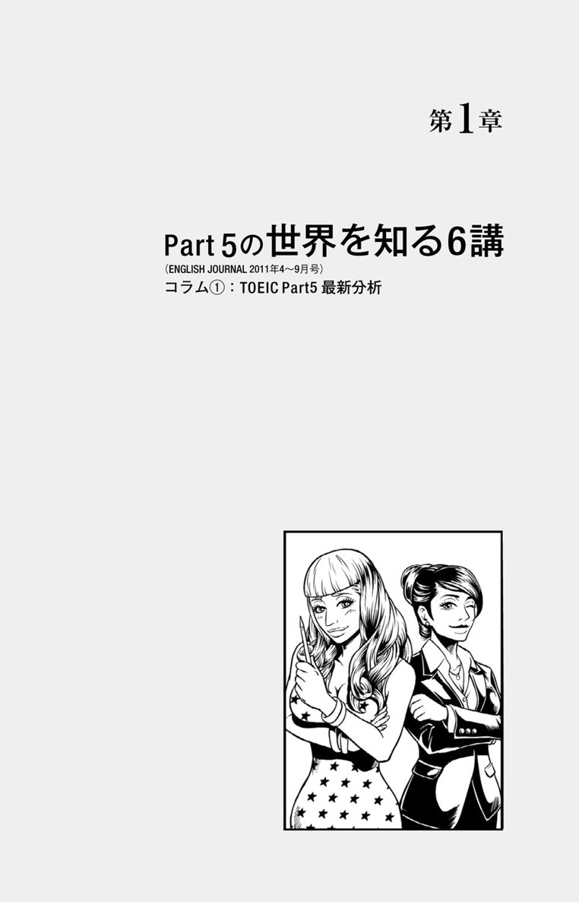

| [新形式問題対応／音声DL付] TOEIC(R)テスト Part 5 できる人、できない人の頭の中 TTTスーパー講師シリーズ | |
| TEX加藤 | |
| (2013) | |

参照項目から元の箇所に戻るには、お使いのビューワーの仕様に従ってください。または一旦目次を表示し、戻りたい箇所の近くの見出しをタップして戻ってください。
は じ め に
いきなりですが、皆さんは、ソフトバンクの孫正義さんのゴルフ上達法をご存じですか？ ゴルフを始めてわずか3年でパープレーを達成した孫さんが最初に行ったのは、「世界で一番フォームのいい人のビデオを半年間、徹底的に見ること」だったそうです。皆さんの中にも、自分の憧れのスポーツ選手のフォームを繰り返し見てイメージすることで、上達のコツをつかんだ経験をお持ちの方はいらっしゃるのではないでしょうか。スポーツに限った話ではなく、英語学習でも、例えば、キング牧師のスピーチやスティーブ・ジョブズのプレゼンを何度も繰り返し見てイメージする、といった学習法は定番です。そこで、です。ドン！（机をこぶしでたたく音） この効果絶大なイメージトレーニングを、TOEICの世界に応用したのが本書なのであります。パチパチパチ（自分で寂しく拍手する音）。
実は、本書で取り上げているTOEICのPart 5（短文穴埋め問題）は、出題パターンが限られているので、「この問題はこうすれば解ける」という「正解イメージ」さえつかめれば、短期間に飛躍的にスコアを伸ばすことが可能です。実際、私が普段指導をしている神田外語学院でも、そうした生徒の姿を数多く目にしてきました。「試験中、先生の解説が頭に浮かんで、問題がスラスラ解けました」「品詞問題を解くイメージがつかめました」といった声を耳にすることもよくあります。こうした「正解イメージ」を皆さんにつかんでいただくのが本書の目的です。
本書では、「イケナイ奥様（中級レベルの学習者）」と「イケテル奥様（上級レベルの学習者）」という2人の奥様の問題を解く際の「頭の中（思考過程）」を、皆さんがイメージしやすいよう、語り口調で再現しています。本書の読み方としては、まず自分で問題を解き、「イケナイ奥様」のオヤジギャグを交えた典型的な誤答例は苦笑しつつさらっと読み流し、「イケテル奥様」の華麗な解き方で「正解イメージ」を脳裏に焼き付けるのがお勧めです。レベルの異なる2人の奥様の考え方をバーチャル体験することで、「正解イメージ」の有無が、いかに最終的な結果に差を生むかがお分かりいただけるはずです（なお、各講の前書きや解説で、読者の皆さんに対し「奥様」と呼び掛けている部分がありますが、「奥様」自体に深い意味はなく、読者を奥様に限定しているわけではもちろんありません）。
本書に掲載されている問題は、月刊ENGLISH JOURNALに連載中のコラム「奥様のためのTOEIC TEST講座」の1年半分の記事（2011年4月号〜'12年10月号）に、Part 5の全体像をつかめる例題8問、最新の出題傾向を反映した確認クイズ15問、そして、ミニ模試30問を加えたものです。本試験の過去問のエッセンスを抽出して練り上げたオリジナル問題を通じて、ぜひ、「TOEICに出る問題」のイメージもつかんでください。
本書を通して、皆さんがPart 5の「正解イメージ」をつかみスコアアップされますことを、著者として心より願っています。
TEX加藤
TTTスーパー講師シリーズ
TOEIC界のベスト＆ロングセラー、『新TOEIC®テスト 直前の技術』（アルク）を生み出したヒロ前田とロバート・ヒルキがトレーナーを務めるアルクの「TOEIC®テストスコアアップ指導者養成講座」(Teacher Training for the TOEIC® Test=TTT)。2005年の開講以来参加者は250人を超え、企業研修・大学・高校・専門学校で活躍するTOEIC講師や教材執筆者を多数輩出しています。"TTTスーパー講師シリーズ"は、TOEICテストに関する深い知識と卓越した指導力を誇るTTT卒業生が、単独／チームで執筆する教材シリーズです。
TOEIC®テスト
Part 5
できる人、
できない人の
頭の中
CONTENTS
（ENGLISH JOURNAL 2011年4～9月号）
（ENGLISH JOURNAL 2011年10～12月号、'12年1、3、4月号）
（ENGLISH JOURNAL 2012年5～10月号）
本 書 に つ い て
本書は、株式会社アルクの月刊英語学習誌ENGLISH JOURNALの人気連載「奥様のためのTOEIC講座」（2011年4月号～'12年10月号に収録されている計18回）を基にし、確認クイズ、コラム、ミニ模試を新しく書き下ろして1冊にまとめたものです。
［第1章〜第3章］
1.講義 全18講
各講義は、Part 5（短文穴埋め問題）形式の問題1問について、イケナイ奥様（中級レベルの学習者）、イケテル奥様（上級レベルの学習者）の2人が解き方のプロセスを披露し合い、それを受けて、著者であるTEX加藤先生が解説を加えるというスタイルを採っています。奥様たちの会話を通して、正解を導き出すための考え方、誤答しやすいポイントを押さえながら、さらに先生による解説を通じて英文法のおさらいをし、Part 5の勘所をつかむことができるようになっています。
登場人物
イケテル奥様
頭脳明晰、「素早く」「華麗に」問題を解くスマート奥様。所持スコア900点。
イケナイ奥様
理屈は二の次、直感を頼りに問題に挑むドジッ子奥様。所持スコア500点。
2.確認クイズ
各章の講義で学んだことがきちんと身に付いているかをチェックするための問題です。ここで間違えた人は、講義のページに戻って、正解に至るまでの道筋を再確認しておきましょう。
3.コラム
講義を補う内容の読み物です。TOEICに役立つ知識を得られるものから息抜きとして気軽に読めるものまで、さまざまな内容を用意しています。
［第4章］
Part 5ミニ模試30問
本書の総括として、Part 5形式の問題を30問連続で解きましょう。制限時間は10分です。
無料音声ダウンロード
本書に掲載されている全問題文（正解が入ったもの）の読み上げ音声とTEX加藤先生・ヒロ前田先生のスペシャル対談の音声は、全て無料でダウンロードいただけます。下記のサイトにアクセスし『TOEIC®テスト Part 5 できる人、できない人の頭の中』を選択、フォームに必要事項をご記入のうえ送信いただくと、ダウンロードページURLのご案内メールが届きます。
ALC Download Center
ダウンロードセンター
http://www.alc.co.jp/dl/
0-00.mp3
左のマークは、音声ファイル名を表しています。次のページの〈mp3ファイル一覧〉も併せてご利用ください。

第1講（3月）
Part 5の問題では、
まず選択肢をチェック！
3月。それは別れの季節。奥様方も目を閉じれば、きっとそこに浮かぶのは、「学園のマドンナ」と呼ばれ、迎えた卒業式。青葉の下で男子学生に写真を次々にせがまれる、そんな級友を横目に通り過ぎた青春の日々でございましょう。あ、申し遅れましたが、私、TEX加藤と申しまして、普段は大学や専門学校でTOEIC講師を務めております。「TEXって名前だからハーフかしら。ちょっとすてきね」などと思われた奥様、申し訳ございません。TEXという名前は、実家の愛犬から拝借したペンネーム。私自身は日本生まれの日本育ち。ハラハラと散る青葉のように頭髪の寂しい四十男でございます。
さて、この本は、ENGLISH JOURNALという伝統ある英語学習誌の連載コラムから生まれたTOEICのPart 5（短文穴埋め問題）対策書で、向上心あふれる奥様方に、本書と同じ形式の問題を解きつつ憩いのひと時を過ごしていただこう、という趣旨の読み物でございます。ティーカップを片手にスイーツでも食べながら、気楽に読んでいただければ幸いです。
ではさっそく、今月の問題を見てまいりましょう。
第1章 第1講
1-01.mp3
The hiring committee was suitably ------- by Ms. Sato's outstanding performance at the interview.
(A) impress
(B) impressed
(C) impressively
(D) impression
Ⓐ Ⓑ Ⓒ Ⓓ
解いたら次のページへ
第1章 第1講
これはPart 5で、最も多く出題されるタイプの問題なのですが、この問題を解く際、最初にどこから読まれたでしょうか？ 「え、そんなの問題文からに決まってるじゃないのよ」と思われたそこの奥様、その解き方では間違いなく、TOEIC本番で制限時間内には解き終わりません（あら、やだ、そうなの）。Part 5の問題は1問平均30秒以内で解かなければいけないので、以下の「イケナイ奥様」のような解き方をしていると、時間が全然足りなくなってしまうのです。
えっと、hiring committeeって、雇う委員会、だから、きっと採用する人たちのことよね。で、やだ、何、このsuitablyって単語、こんなの知らないわよ。 まあいいわ。 気を取り直して、 空所の後は、佐藤さんの、outstanding、何よ、この単語も知らないわ。やだもう。「アウトスタンディングー」っていえば「グーグー」言ってたエド・はるみさん、今どうしてるのかしらね。いけない、問題に集中しないと。performance at the interviewってこれは分かるわ。最初に採用のことが書いてあったから、これはきっと面接での佐藤さんのパフォーマンスってことね。フフ。私もやるわね。分かってきたわよ。そうそう、選択肢を見るの忘れてたわ。あら、このimpressって、これ、私が使ってる化粧品のブランド名じゃないの。でも意味が分からないわね......（以下延々と続く）。
おやおや、「イケナイ奥様」は設問文の意味をつかむことにとらわれて迷路に迷い込んでしまったようです。しかもこの調子では、リーディングセクションの最後の問題までたどり着けそうもありません。実は、目の付けどころさえ間違えなければ、この問題はあっという間に解けてしまいます。「イケテル奥様」はどのように問題を解くのか、さっそくご覧いただきましょう。
まずは選択肢をチェックっと。あら、似たようなスペルで始まる単語が並んでるわ。ということは、これは品詞問題ね。空所に入る正しい品詞を選べ、っていう文法問題よ。空所の前後を見ると、空所の前にwasがあって、空所の後ろにbyがあるから、これは「be動詞+過去分詞+ by誰々」の「受け身」の形に違いないわ。suitablyは-lyが付いてるから副詞、文法的には無視していい、単なる飾りね。ということは、空所にはなんとか-edで終わる単語を選べばいいから、(B)が正解よ。ホホホ。軽いわ（この間約10秒）。
第1章 第1講
今月の問題
The hiring committeewas suitably -------by Ms. Sato's outstanding performance at the interview.
このwasとbyに注目したいわ。
(A) impress
(B) impressed
(C) impressively
(D) impression
先に選択肢をチェックするのがポイントだったのね。
第1章 第1講
さて、皆さんの解き方はいかがでしたか？
TOEICのPart 5は全部で40問あるのですが、空所に入れると文法的に正しくなるものを選ぶ「文法問題」と、空所に入れると文の意味が通じるものを選ぶ「語彙問題」が、おおよそ半分半分の割合で出題されます。「文法問題」は空所の前後を見ただけで解答できる場合が多いため、制限時間内に効率的に解くためには、最初に問題文ではなく選択肢に目を通し、2種類のうちのどちらのタイプの問題なのかを見分け、「文法アプローチ」と「意味アプローチ」のどちらで相手に接近するのか、判断をしなければならないのです。
この「選択肢で問題タイプを判断→空所の前後をチェック→解答」という流れは、Part 5を解く際の基本中の基本です。知らなかったという人は、今すぐ覚えてくださいね。
念のため、impressは「〜を感心させる」という意味の動詞、(B) impressedはその過去形か過去分詞、(C) impressivelyは「印象的に」という意味の副詞、(D) impressionは「印象」という意味の名詞です。正解以外の選択肢は、いずれも文法的に空所に入れることはできません。また、outstandingは、「傑出した」の意味と「未払いの」の2つの意味が重要です。out（外に）+ standing（立っている）から、「他の人たちから抜きんでている」、あるいは「払い終わっていないものがぽつんと残っている」のイメージを持つと覚えやすいですよ。suitablyはsuit（〜に合う）の派生語で、ここでは、「期待に合って、期待通りに」のニュアンスです。This dress suits you well.（このドレス、君によく似合うね）といったセリフは、奥様もよく耳にされることでしょう。
今回のポイントは、TOEICのPart 5を解く際は、「まずは選択肢を見て問題タイプを把握する」「選択肢に派生語が並んでいる問題は文法アプローチで解く」でした。「文法」と「意味」のどちらのアプローチで問題に迫るのかを素早く判断し、流れるように美しい解き方で華麗に攻略しましょう。
第1章 第1講
正解：(B)
問題文：The hiring committee was suitablyimpressed by Ms. Sato's outstanding performance at the interview.
語注：hiring名雇用、採用 committee名委員会、（全）委員
訳：採用委員会は、佐藤さんの面接における、期待通りの素晴らしいパフォーマンスに感心した。
（ENGLISH JOURNAL 2011年4月号収録）
第2講（4月）
単語の意味を
知らなくても解ける？
さて、4月といえば「始まり」の時。この時期になると、街を歩いている新入生・新社会人のフレッシュでまぶしい姿に触発され、「始まり」とはこのところ無縁の奥様方も、「4月だから何か始めなきゃ」とにわかに思い立ち、ダイエットや英会話に励まれていることでございましょう。世の英会話産業は、「毎年4月に3日間だけ英会話に励む奥様方」によって成り立っているのではないかと、私はひそかににらんでいるのであります。今一瞬、シュークリーム片手にハッとされた奥様の顔が脳裏をよぎりましたが、まさかここにはそうした三日坊主の奥様はいらっしゃらないはず。きっと私の気のせいでございましょう。
第1講でも申し上げましたが、この本は、ENGLISH JOURNALというハイソ（死語）な英語学習誌を読まれているような学習意欲あふれるすてきな奥様方に、TOEIC形式の問題を解きながら憩いのひと時を過ごしていただこう、という趣旨でまとめられた1冊でございます。例えて言えば、一流料亭の懐石料理の「箸休め」のようなもの、慈愛に満ちた聖母のような目でお読みくださいませ。
では前置きが長くなりましたが、今月の問題を見てまいりましょう。
第1章 第2講
1-02.mp3
Revised policies for returns and exchanges at Tex Clothing Mart, a local retailer of women's clothing, ------- on May 1.
(A) implementing
(B) has been implemented
(C) will be implemented
(D) implements
Ⓐ Ⓑ Ⓒ Ⓓ
解いたら次のページへ
第1章 第2講
ここからは、良い例悪い例の解き方を比較しながら、ポイントを説明していきます。まずは「イケナイ奥様」の解き方から。
えっと、まずは、Revised policiesってどういう意味かしら。あ、いけない、TOEICの穴埋め問題は、選択肢から先に読んで、文法的に正しくなるものを選ぶ「文法アプローチ」と、文の意味が通じるものを選ぶ「意味アプローチ」の、どっちのアプローチで相手に迫るのかを最初に判断するようにって、第1講で、TEXナントカってうるさいオヤジに説教されたんだったわ。選択肢から読まなきゃ。ん、何よ、このimplementって単語。見たことないわ。しかも4つともこの単語が入ってるじゃないの。知らない単語なのにどうやって解けっていうのよ。あ、そうよ。-ingが付いているってことは、この単語は動詞よ。でもそれが分かってもどうしようもないわ。「動詞だけにどうしようもない」って、フフ。われながらハイセンスなダジャレね。ちょっとこれはメモしておかないと。あ、いけない。問題解きながらすぐに脱線するのは私のいけない癖ね。でも選択肢の単語自体を知らないんだから、今回はどうしようもないわよね。お手上げだわ。
「イケナイ奥様」も、最初に選択肢をチェックされたのは進歩ですね。実は、選択肢に同じ動詞の異なる形が4つ並んでいるタイプの「動詞問題」は、単語自体を知らなくてもほとんど解けるんです。では「イケテル奥様」の解き方をご覧ください。
まずは選択肢をチェックっと。あら、implementって単語は知らないけど、-ingが付いているからこれは動詞ね。同じ動詞の異なる形が4つ並んでいる「動詞問題」だわ。このタイプの問題は、最初に主語（S）と述語動詞（V）を見つけるのがポイントよ。次にこの文の主語をチェックすると、Revisedの意味がよく分からないけど、その次のpoliciesは名詞だから、これがSよね。「～されたポリシー」が主語ってことだわ。Vはどこかしら。forから先の「前置詞+名詞」は修飾語だから、(for returns and exchanges) (at Tex Clothing Mart)ってカッコでくくってゴミ出しして、その後のカンマとカンマの間も単にTex Clothing Martの説明だから無視ね。ということは、この文全体の形はRevised policies ------- on May 1.ってことだわ。つまり、空所には述語動詞が必要ってことだから、(A)は駄目ね。で、主語が複数形だから、三人称単数の主語を示唆する(B)、三単現のsが付いてる(D)も間違いよ。ということで、正解は(C)ね。
第1章 第2講
今月の問題
Revised policies for returns and exchanges at Tex Clothing Mart, a local retailer of women's clothing,------- on May 1.
ここが主語と述語動詞だってわかったかしら？
(A) implementing
(B) has been implemented
(C) will be implemented
(D) implements
implementの意味を知らないと解けないと思ったんだけど...。
第1章 第2講
「イケテル奥様」は、単語自体を知らなくても華麗に正解されました。このように、「動詞問題」を解く際は、「まずはSVをチェックする」という「文法アプローチ」で迫るのが基本です。空所に求められているのが述語動詞なのかそうでないのか、主語が求めているのがどういう形の動詞なのかを最初にチェックしましょう。
なお、選択肢の動詞implementは「〜を実行する、〜を実施する」という意味のTOEIC重要単語です。また、問題文中のreviseはre（再び）+ vise（見る）が語源の、「〜を見直す、〜を改訂する」という意味の動詞です。同じviseを語源に持つ単語として、super（上から）+ vise（見る）で「〜を監督する、〜を管理する」という意味のsuperviseも併せて覚えましょう。
TOEIC本番の「動詞問題」では、last yearやnext weekのような「時を表すキーワード」を見つけて解く「時制」や、「スルかサレルか」を問う「態」がポイントの、単にSVをチェックするだけでは解けない問題も出題されますが、そうした問題でも、最初に設問文のSVを確認し、合わないものを正解の候補から外すのが基本戦略です。例えば、空所にV（述語動詞・本動詞）が求められていたら、不定詞や動名詞、分詞といった準動詞（Vではない形）を選んではいけません。逆に、空所以外にVがあれば、空所には準動詞が入る可能性が高くなります。ということで、今回のポイントは、「動詞問題」を解く際は、単語自体を知らなくても諦めずに、まずは「SVをお見合いさせる」でした。空所が求めている条件に合う理想の相手を見つけてあげてください。それでは、皆さん、第3講でまたお会いしましょう。ごきげんよう。サヨナラ。サヨナラ。サヨナラ。
第1章 第2講
正解：(C)
問題文：Revised policies for returns and exchanges at Tex Clothing Mart, a local retailer of women's clothing,will be implemented on May 1.
語注：revise動～を改訂する retailer名小売業者
訳：地元の婦人服販売店であるテックス・クロージング・マートの改訂された返品交換規定は、5月1日に実施される予定だ。
（ENGLISH JOURNAL 2011年5月号収録）
第3講（5月）
主語は人？ モノ？
動詞を選ぶポイント
皆様、こんにちは。「TOEIC界のきみまろ」を目指す中年TOEIC講師、TEX加藤です。心配された「全国婦人連盟TOEIC支部」からの書籍化反対の申し入れもなく、無事、第3講を迎えることができました。きっと読者の奥様方は、心が広く、知的で、5月の風のように爽やかで、そのお姿もさぞかしお美しいことでございましょう、首から下が。失礼いたしました。「綾小路きみまろ 爆笑！ エキサイトライブビデオ」の見過ぎで、ついネタを拝借してしまいました。決して私の本音ではございません。
「つまんない無駄話してないで、さっさと問題出しなさいよ。このハゲオヤジ」という声がどこからか聞こえてきた気がしましたが、まさかこの本の読者が、そのようなお下品なお言葉をお発しになられるはずはございません。きっと私の気のせいでございましょう。そう信じつつ、今月もTOEIC形式の問題を解きながら、ポイント解説を行ってまいりたいと思います。
第1章 第3講
1-03.mp3
Although the movie received mostly positive reviews from critics, the box office sales have been ------- so far.
(A) disappoint
(B) disappointed
(C) disappointing
(D) disappoints
Ⓐ Ⓑ Ⓒ Ⓓ
解いたら次のページへ
第1章 第3講
ここからは、2人の奥様の解き方を比較しながら、ポイントをご説明していきます。まずは「イケナイ奥様」の解き方から。
えっと、まず、選択肢を見て「文法問題」か「語彙問題」かの判断をするんだったわね。あら、同じつづりで始まる単語が並んでるじゃないの。これは「文法問題」ってことよね。さっそく空所の前後をチェックしないと。空所の前がhave beenで、空所の後ろがso farってなってるわ。so farって何かしら。ソファ（それはsofa）に似てるけど、たぶん違うわよね。そういえば、この間『婦人●報』で見掛けたソファ、すてきだったわ。でも、うちにはソファなんて置くスペースないわよね。煎餅座布団で我慢だわ。あ、いけない。問題に戻らないと。えっと、so farは取りあえず置いといて、be動詞のbeenの後ろに動詞の原形の(A)や、(A)に三単現のsが付いた(D)は置けないわよね。残ったのは(B)と(C)だけど、disappointって確か「がっかりする」って意味じゃなかったかしら。「私は亭主にがっかりしている」だったら、I am disappointed in my husband.って、私ったらこんな例文だけはスラスラ出て来るわ。ここは主語がbox office salesで、何かの売り上げみたいだから、「がっかりするような売り上げだ」ってことで(B)が正解じゃないかしら。
「イケナイ奥様」、毎月、着実に進歩されていますね。最初に選択肢をチェックして文法問題だと判断し、空所の前後を文法的な観点でチェックするという解き方の流れは完璧で、正解まであと一息でした。では、「イケテル奥様」の解き方を見てみましょう。
えっと、選択肢を見るとこれは文法問題だから、空所の前後をチェックっと。空所の前がhave beenで後ろがso farね。so farは「今のところ」って意味の単なる飾りだから、ここでは解答とは関係ないわ。で、have beenの後ろに動詞の原形や現在形は置けないから、(A)と(D)は間違いよ。残るは(B)か(C)で、どっちも文法的には入れられるから、意味を考えないといけないわね。have beenの主語を見ると、box office salesだから、これは何かの売り上げよね。disappointは「〜をがっかりさせる」って意味で、主語がモノの場合は能動態が普通は使われるはずよ。受動態にすると、「売り上げが、がっかりさせられた」っていう意味になるからおかしいわ。exciteが「〜をわくわくさせる」って意味で、映画を主語にするとThe movie is exciting.になるのと同じよね。売り上げは人をがっかりさせるモノだから、正解は(C)だわ。
第1章 第3講
今月の問題
Although the movie received mostly positive reviews from critics, the box office saleshave been ------- so far.
この後ろに(B)か(C)が来るってことはわかったのに。
(A) disappoint
(B) disappointed
(C) disappointing
(D) disappoints
-edと-ingの違いは大きいわよ。
第1章 第3講
「イケテル奥様」、さすがですね。日本語では、感情を表す動詞は、「驚く」「喜ぶ」「がっかりする」といった形で使われます。感情が自分の内側から湧き上がってくるイメージです。ところが、英語では、感情は何か外の要因によって引き起こされるイメージなんです。例えば、先ほどの「イケナイ奥様」が作られた例文、I am disappointed in my husband.であれば、主語である奥様が、ご主人という存在によって「がっかりさせられた」と考えて、受動態が使われます。disappointは「がっかりする」ではなく、「〜をがっかりさせる」という意味なんです。英語には、「がっかりする」って単語はないんですのよ、奥さん。あらやだ、そうなの。
この問題では、主語はbox office salesです。box officeというのは、映画や劇などのチケット売り場のことで、box office salesはチケット売り場の売り上げ、つまり、「興行収入」という意味です。「イケテル奥様」が考えられたように、映画の興行収入が人を「がっかりさせる」のですから、ここでは能動態（disappointing）が正解です。受動態（disappointed）を選んでしまうと、興行収入が、「俺って駄目だなあ」と自分自身にがっかりさせられていることになってしまいます。
このように、動詞の-ing形か-ed形かを選ぶ際は、主語との間に「させる」か「される」かのどちらの関係があるのかが、ポイントになります。例えば、今回のdisappointのような感情を表す動詞でTOEICに最頻出なのがplease（〜を満足させる）ですが、皆さんがTOEICの結果に満足している場合、皆さんは結果によって「満足させられている」ので、I am pleased with the result.となります。
いかがだったでしょうか。私は大学時代、感情表現を全て「される」で表すゲームをクラスメートとしたことがあります。例えば、「今日の授業には感動した」を「今日の授業には感動させられた」、などと話すのです。この「させる」か「される」かは、日本人にとってはつかみづらい感覚ですので、普段の英語学習の際にもぜひ意識するようにしてみてください。それでは、また次講でお会いしましょう。バイナラ（死語）。
第1章 第3講
正解：(C)
問題文：Although the movie received mostly positive reviews from critics, the box office sales have beendisappointing so far.
語注：review名批評、論評 critic名批評家、評論家 so far 今のところ
訳：その映画は、評論家から受けた批評のほとんどが好意的だったにもかかわらず、興行収入は今のところ期待外れだ。
（ENGLISH JOURNAL 2011年6月号収録）
第4講（6月）
30年以上も出題され続ける
問題タイプ
6月の雨に濡れたアジサイのように、華やかでありながらしっとり艶やかなお美しい奥様方、こんにちは。雨に濡れると「スーツを着た落ち武者」になる、頭髪寂しい中年TOEIC講師、TEX加藤です。
さて、6月といえばJune Bride。読者の奥様方の中にも、6月に結婚式を挙げられた方がきっといらっしゃることでしょう。純白のウエディングドレスに身を包んだ、輝くようにお美しい当時のお姿はそのままに、「知的ですてきな奥様」を目指し、日々英語学習に精進されている姿勢には、私もただただ脱毛、ではなく脱帽するのみでございます。
ところで、今のこの時期、TOEIC業界はといいますと、「5・6・7月」と続く「TOEIC公開テスト3連戦」の真っ最中です*。この戦いに参戦している奥様もいらっしゃるかと思いますので、さっそくTOEIC形式の問題を解きながら、ポイント解説に移ってまいりたいと思います。
*2013年時点では、3〜7月の5連戦になっている。
第1章 第4講
1-04.mp3
Texsound Inc., has announced that it will stop producing the Tex990 line of speakers ------- high product return rates.
(A) although
(B) due to
(C) even if
(D) because
Ⓐ Ⓑ Ⓒ Ⓓ
解いたら次のページへ
第1章 第4講
ここからは、2人の奥様の解き方を比較しながら、ポイントをご説明していきます。最初に「イケナイ奥様」の解き方から。
まずは、選択肢を見て「文法問題」なのか「語彙問題」なのかをチェックね。あら、初めて見るタイプの選択肢だわ。どっちのタイプの問題なのか分からないから、ここは取りあえず頭から読むしかなさそうね。えっとまず、テックスサウンドは会社名で、この会社がthat以下のことを発表したってことね。thatの後のitはこの会社のことだから、この会社がTex990ラインのスピーカーを生産するのをやめる予定だって意味ね。空所の後ろは、高い製品返品率、ってことじゃないかしら。ということは、整理すると、「返品率が高いから、生産をやめる予定だ」ってことよ、きっと。もうっ、完璧じゃないの、私ったら。後は選択肢の中から、「～だから」っていう理由を示すものを見つければOKね。まず(A)は確か、「～にもかかわらず」って意味だから、「返品率が高いにもかかわらず生産をやめる予定だ」って、なんだかおかしいわ。(B)のdue toって何かしら。私が学生の時に好きだったロックバンドのU2と音が似てるわね。あの頃のU2、私の青春だったわ。あ、いけない、また空想癖が。えっと、(B)はさて置いて、(C)はifが付いてるから「もしも系」の意味よね。理由じゃないはずよ。残るは(D)だけど、あら、何よ、(D)がbecauseじゃないの。もう最初から言ってよ。待ってたのよ、これを。今回は自信あるわ。正解は(D)よ。
「イケナイ奥様」、初めて解くタイプの問題ですが、よく頑張られましたね。正解まであと一歩でした。では、例によって「イケテル奥様」の華麗な解き方を見てみましょう。
まずは選択肢をチェックっと。あ、これは、「前置詞or接続詞」タイプの問題だわ（こちら参照）。空所に入れると文法的に正しいのはどっちかを問う、文法問題よ。このタイプの問題は、まず空所の後ろのカタチをチェックするのが基本よね。空所の後ろがS+Vの文なら接続詞、そうではなくて名詞のカタマリだったら前置詞を選べばいいのよ。ここは、空所の後ろがhigh product return ratesだから、「製品の高い返品率」って名詞句だわ。ということは、前置詞を選べばいいってことね。えっと、選択肢の中だと(B)が前置詞で、他は全部接続詞だから、正解は(B)ね。
第1章 第4講
今月の問題
Texsound Inc., has announced that it will stop producing the Tex990 line of speakers -------high product return rates.
ここが名詞のカタマリだから、前置詞を選べばいいわね。
(A) although
(B) due to
(C) even if
(D) because
選択肢を見て文法問題だって気付けてれば...。
第1章 第4講
「イケテル奥様」、さすがですね。「イケナイ奥様」が悪戦苦闘された問題を、推定5秒で正解されました。今月の問題は、30年以上前にTOEICがスタートして以来、出題され続けている、定食屋でいえば「サバの味噌煮定食」のような定番メニューです。30年以上もの間、出題され続けているということは、30年以上もの間、毎回間違える受験者の方がいるということですが、実は、ここだけの話、コツさえつかめば、間違いを激減させることができるタイプの問題なんですのよ、奥様。
この「前置詞or接続詞」問題では、「空所に入れると文法的に正しくなるのは、前置詞か接続詞のどちらですか」ということが問われています。本番のテストの選択肢に、although、despite、while、due to、becauseといった単語が並んでいたら、間違いなくこのタイプの問題です。
「前置詞or接続詞」問題でチェックすべきは、「空所の後ろのカタチ」です。この部分が、「S+V」という文なら接続詞、そうでなければ前置詞を選ぶ、というのが、この問題を解く鉄則です。そんなこと言われても、空所の後ろがS+Vかどうかなんてよく分からないわ、とおっしゃる奥様は、カタチを見分けるための一番簡単な方法として、Vになる動詞を探してみてください。あれば、基本的に接続詞が正解です（例外はありますが、この考え方が基本です）。
先ほどの例題では、空所の後ろは、high product return rates（製品の高い返品率）という名詞句でした。Vに当たる動詞がない、ということは前置詞を選べば良いので、選択肢の中で唯一の前置詞である「～が原因で」という意味の(B) due toを選べば良いわけです。他の3つの選択肢(A) although、(C) even if、(D)becauseは全て接続詞なので、後ろに名詞のカタマリ（名詞や名詞句）を置くことはできず、because the return rates are highといったS+Vの形でなければいけません。なお、(D)は、becauseofとすれば、前置詞になり、due toと同じ役割をすることができます。
いかがだったでしょうか。本番のTOEICで、もしこのタイプの問題が出題されたら、「空所の後ろのカタチ」をチェックして、華麗に正解してくださいね。 では、また次講でお会いしましょう。皆様、ごきげんよう。
第1章 第4講
正解：(B)
問題文：Texsound Inc., has announced that it will stop producing the Tex990 line of speakersdue to high product return rates.
語注：produce動～を生産する line名製品の型、商品の種類
訳：テックスサウンド社は、製品の高い返品率が原因で、Tex 990シリーズのスピーカーの生産を中止すると発表した。
（ENGLISH JOURNAL 2011年7月号収録）
第5講（7月）
毎回のように問われる
「ペア表現四天王」
夏。澄み渡る青空に、飛行機雲で大きく「TOEIC」という文字をいつか描いてみたい、そんなささやかな夢を持つ中年TOEIC講師、TEX加藤です。読者の皆様も、TOEIC本番前日の夕食は、オムライスにケチャップで「TOEIC」、デザートで添えられたバニラアイスにはチョコレートソースで「目標スコア」、そんなふうに、TOEICをイベントとして盛り上げる工夫をされてはいかがでしょうか。実際にやってみた、という奇特な奥様がいらっしゃいましたら、編集部宛てに写真を添えてご報告ください（さすがにいないかなあ）。
さて、「5・6・7月」と続いた「夏のTOEIC公開テスト3連戦」*も、いよいよ今月末が最終戦です。参戦される奥様方、ぜひ涼しげなほほ笑みを浮かべながら、華麗に200問を解き、有終の美を飾ってください。額から滝のように流れる汗を、首に巻いた白タオルで拭って、鬼の形相で問題に取り組む奥様の姿が、私の心を一瞬よぎりましたが、きっと夏の蜃気楼でございましょう。
それでは、今月の問題演習とポイント解説に移ってまいります。
*2013年時点では、3〜7月の5連戦。
第1章 第5講
1-05.mp3
Conversations with customer service representatives conducted ------- the telephone or through e-mail may be recorded for training purposes.
(A) over
(B) either
(C) both
(D) never
Ⓐ Ⓑ Ⓒ Ⓓ
解いたら次のページへ
第1章 第5講
ここからは、2人の奥様の解き方を比較しながら、ポイントをご説明していきます。最初に「イケナイ奥様」の解き方から。
えっと、まずは選択肢を見て、問題タイプをチェックね。あら、これって、この間、ブック●フで立ち読みしたTOEIC参考書で見たわよ。確か、「選択肢にbothやeitherがある問題は、ペアを探して秒速解答！」って書いてあったわ。ということは、ペアを探せばOKね。どれどれ。あ、あったわ。the telephoneの後ろにorが。orはeitherとペアになって、「either A or B」で「AかBのどちらか」って意味のはずよ。「電話かメールのどちらかで」って意味も通じるし。もうっ。「夏といえばTUBE」「チャゲといえば飛鳥」「orといえばeither」で決まりよ。フフ。今回こそ正解だわ。正解は(B)だーよー（TUBEのメロディー風に）。
「イケナイ奥様」、選択肢を見て問題タイプを把握し、解き方もほぼ完璧でしたが、正解まであと一歩でした。では、例によって「イケテル奥様」の解き方を見てみましょう。
まずは選択肢をチェックね。あ、これってペアを探すタイプの問題じゃないかしら。telephone の後ろに or through e-mail があって、「電話かメールで」ってことだから、orとセットで使われるeitherが正解かしら。ん、でもなんか変ね。もし eitherを入れたら、 either the telephone or through e-mail になるけど、orは前後に同じ形が並ぶはずだから、e-mailに前置詞が付いていてthe telephoneに付いていないのは美しくないわ。あ、そうよ。前置詞の over を入れれば、over the telephone or through e-mail できれいに左右対称になるわ。Conversations conducted over the telephone or through e-mailなら、「電話によって、またはメールを通じて行われたやりとり」で意味も通じるし、正解は(A)ね。
第1章 第5講
今月の問題
Conversations with customer service representatives conducted ------- the telephone orthrough e-mail may be recorded for training purposes.
orの前にもここと文法的に等しいものが入るはず。
(A) over
(B) either
(C) both
(D) never
orを見てeitherにすぐ飛びついちゃ駄目ね。
第1章 第5講
一瞬eitherを選びそうになったものの、orの前後の形に着目して考え直し、正解された「イケテル奥様」は、非常に高い英語センスをお持ちですね。実は、ここだけの話、以前のTOEICに同じような問題が出題されて、eitherを選んで間違ってしまった方がたくさんいらっしゃったんですって。え、そうなの。あらやだ、知らなかったわ。
TOEICのPart 5では、以下の「ペア表現四天王」の中から、ほぼ毎回1つが出題されます。
both A and B（AとBのどちらも）
either A or B（AかBのどちらか）
neither A nor B（AとBのどちらも～ない）
not only A but also B（AだけでなくBも）
試験本番では解答時間が限られていますので、こうしたペア表現の片方が選択肢に並んでいたら、もう片方を探して効率的に解答するのは正しい戦略と言えます。ですが、ハイセンスな奥様方には、問題を機械的に解くのではなく、空所を補充して正しい英語表現を完成させるという意識を、ぜひ持っていただきたいところです。
先ほどの例題に戻ると、「イケテル奥様」が考えられた通り、orはandと同じく、文法用語では「等位接続詞」と呼ばれ、その名の通り、「文法的に等しいものを前後に並べる」役割をします。「天秤ばかり」のイメージを思い浮かべてください。ここではorの右にあるのは、through e-mailという「前置詞+名詞」のカタマリで、文法的には、「メールで→行われた」と前のconductedを修飾する副詞の役割をしています。それに対し、orの左に名詞のthe telephoneを置くと、左右の「文法バランス」が取れません。そこで、前置詞のoverをthe telephoneの前に足せば、over the telephone or through e-mailと左右のバランスが整い、conversations with customer service representatives conducted over the telephone or through e-mail（顧客サービス担当者との、電話またはメールを通じて行われたやりとり）という、この文の主語が完成します。ちなみに、もしeitherを使うなら、either over the telephone or through e-mailや、either by telephone or (by) e-mailと、左右のバランスが取れた形にすればOKです。
いかがでしょうか。穴埋め問題の解き過ぎで、問題文にorがあったら反射的にeitherを選んでしまうといった「TOEIC病」に陥らないよう、テスト本番や普段の問題演習の際は、文法的・意味的に正しい英文を完成させる、というTOEICが本来求めているスキルを忘れないようにしましょう。空所の前後だけでなく、問題文全体に視野を広げることができると、正答率もアップしますよ。
第1章 第5講
正解：(A)
問題文：Conversations with customer service representatives conductedover the telephone or through e-mail may be recorded for training purposes.
語注：conversation名会話、やりとり representative名代理人、販売員
訳：顧客サービス担当者との、電話またはメールを通じて行われたやりとりは、研修目的のため、記録させていただく場合がございます。
（ENGLISH JOURNAL 2011年8月号収録）
第6講（8月）
接尾辞-lyが付くと
どんな意味になる？
冷房のない閉め切った部屋で30分、汗だくになりながらTOEICの英文を音読した後に食べる「ガリガリ君（ソーダスティック）」。それだけを楽しみに日々暑さに耐える、中年TOEIC講師TEX加藤です。いっそサウナスーツでも着込んで「音読ダイエット」に励もうかと思う今日この頃ですが、脱水症状を起こしかねないので、賢明な読者の皆様は決してまねをなさらないようにしてください。え、言われなくても、そんなことする変態はあんたぐらいよって？ これは失礼しました。
さて、5・6・7月と続いた「TOEIC公開テスト3連戦」が終わり *、ほっと一息つきたいところですが、ひと月置いて9月にはもう次の公開テストです。受験される奥様方は、暑さに負けないよう、おしゃれな「冷えるスカーフ」を巻いて、準備に励んでください。
それでは、今月の問題とポイント解説です。
*2013年時点では、3〜7月の5連戦。
第1章 第6講
1-06.mp3
Tex Kato will leave for New York tomorrow and return to Tokyo head office ------- next Wednesday.
(A) formerly
(B) lately
(C) early
(D) recently
Ⓐ Ⓑ Ⓒ Ⓓ
解いたら次のページへ
第1章 第6講
ここからは、2人の奥様の解き方を比較しつつ、ポイントをご説明していきます。最初に「イケナイ奥様」の解き方から。
えっと、選択肢が全部-lyで終わってるってことは、どれも副詞だから、文法問題じゃないわね。文の意味が通じる単語を選ぶ語彙問題よ。まずこの文の主語は、あら、またTEXナントカだわ。この名前を見ると、なんか間違いそうな嫌な予感がするのよね。まあいいわ。このおっさん、失礼、おじさんがニューヨークへ明日出発して、次の水曜日に東京本社に戻るってことね。(A)は「以前は」、(D)は「最近」って意味だから、どっちも「次の水曜日」と一緒には使えないはず。残ったのは(B)か(C)だけど、水曜日の遅い時間か早い時間か、ってことかしら。うーん。ニューヨークって、私がまだうら若き乙女だった学生時代、卒業旅行で初めて訪ねた街なのよね。あの時、アッシー君に成田空港に迎えに来させたのは確か夕方だったわ。あれからずいぶん月日がたったわね。いけない。思い出に浸ってる場合じゃないわ。この問題、自信はないけど、「私の思い出に完敗、じゃなくて乾杯」ってことで、取りあえず正解は(B)にしておくわ。
「イケナイ奥様」、選択肢から語彙問題だと判断し、「意味アプローチ」で正解しかけたのですが、個人的な経験から答えを選んではいけませんね。では、例によって「イケテル奥様」の解き方を見てみましょう。
まず、選択肢が全部副詞だから、「空所に入る品詞はなんですか」っていう文法問題じゃなくて、「空所に入れると文の意味が通じるのはどれですか」っていう語彙問題ね。さっそく問題文の意味をチェックっと。TEX加藤は明日ニューヨークへ向けて出発し、次の水曜日に東京本社に戻って来るってことね。「次の水曜日」を詳しく説明する副詞を入れればOKだわ。(A)は「以前は」、(B)と(D)はどちらも「最近」って意味だから、「次の水曜日」とは一緒に使えないわね。ということで残った(C)を入れると、「次の水曜日の早い時間に」って文の意味が通じるから、これが正解ね。ホホホ。汗をかく間もなかったわ。
第1章 第6講
今回の問題
Tex Kato will leave for New York tomorrow and return to Tokyo head office -------next Wednesday.
これを詳しく説明できる語を選べばいいのよ。
(A) formerly
(B) lately
(C) early
(D) recently
-lyを見れば全部副詞で語彙問題だってことは分かるわ。
第1章 第6講
さすが「イケテル奥様」。軽くクリアされました。皆さんはいかがだったでしょうか。「イケナイ奥様」と同じように考えて、(B)を選んでしまった方もいらっしゃるかもしれませんね。以下でそれぞれの選択肢の用法を確認していきましょう。
まず、(A)のformerlyは「以前は」の意味で、Tex Kato was formerly an employee at a toy manufacturer.（テックス加藤は、以前は玩具メーカーの社員だった）といった形で、主に過去の出来事を表す文で使われます。(D)のrecentlyは皆さんにもなじみのある単語でしょう。Tex Kato has recently been promoted to Chief Executive Officer.（テックス加藤は最近、最高経営責任者に昇進した）のように、こちらも既に終わった出来事を表す際に使われます。なお、recentlyは「最近」と和訳されますが、a short time ago（ちょっと前）の意味ですので、「私は最近、英語を毎日勉強している」といった習慣を表す現在形では使えないことにも注意しましょう。
残る2つの選択肢のうち、「イケナイ奥様」が選んでしまった(B)のlatelyは、「ここのところ」という意味で、I haven't seen Tex lately.（ここのところテックスを見ていません）のように現在完了形で使われます。ですから当然、未来の時を表すnext Wednesdayの前に置くことはできません。もし、「次の水曜日の遅い時間に」と言いたければ、late next Wednesdayとlatelyから-lyを取ったlateが使われます。ちなみに私は、ロック界の大御所ロッド・スチュワートのラブバラード"Have I Told You Lately?"の歌詞でlatelyの意味を覚えました。この曲の動画はYouTubeでも見られますから、興味のある方はぜひご覧ください。ロマンチックな歌詞とメロディーで、1度聞いたらlatelyの意味を覚えられるはずです。
ということで、この問題の正解は、next Wednesdayの前に置いて、「次の水曜日の早い時間に」と、特定の曜日のさらに細かい時間帯を示すことができる(C) earlyでした。この単語は、early tomorrowやearly last week、early next yearといった形で、時を示す表現の前に置いて「早いタイミング」を表すことができます。
いかがでしたか。lateとlatelyのように、-lyが付くと意味が変わる単語には、high（高い）とhighly（非常に）、hard（熱心な）とhardly（ほとんど～ない）、near（近い）とnearly（ほとんど）などがあります。いずれもTOEICにしばしば登場する単語ですから、しっかり違いを押さえておきましょう。
それでは、また次講でお会いしましょう。
第1章 第6講
正解：(C)
問題文：Tex Kato will leave for New York tomorrow and return to Tokyo head officeearly next Wednesday.
語注：head office 本社
訳：テックス加藤は明日、ニューヨークへ向けて出発し、次の水曜日の早い時間に東京本社に戻って来る予定だ。
（ENGLISH JOURNAL 2011年9月号収録）
第1章 確認Q
確 認 ク イ ズ
正解と解説 ➡こちら
制限時間 100秒
1-07.mp3〜1-11.mp3
1. According to a recent survey, the most important feature to families looking for a car is -------.
(A) rely
(B) reliable
(C) reliably
(D) reliability
2. Original receipts ------- from employees for the reimbursement of all business and travel expenditures greater than $75.
(A) have required
(B) are requiring
(C) are required
(D) will require
3. The hotel where we usually hold the annual shareholder meeting has been newly -------.
(A) renovate
(B) renovating
(C) renovation
(D) renovated
4. The hiring department does not schedule interviews with candidates ------- all letters of reference have been received.
(A) until
(B) during
(C) without
(D) despite
5. ------- the tour members choose to visit nearby attractions or to spend the day shopping, they have to return to the bus by 5:00P.M.
(A) Both
(B) Either
(C) Neither
(D) Whether
正解と解説は次ページ⇒
第1章 確認Q
確認クイズ 正解と解説
1.
正解：(D)
問題文：According to a recent survey, the most important feature to families looking for a car isreliability.
語注：according to ~ ～によると recent形最近の survey名調査 feature名特徴、特性
訳：最近の調査によると、車を求めている家族にとって最も重要な特性は信頼性である。
問われているポイント：品詞+語彙
解説：文法的に正しい品詞を空所に選ぶ「品詞問題」。空所にはbe動詞isの補語が求められているので、形容詞か名詞が候補に残るが、文意に合うのは名詞の(D) reliability（信頼性）。「be動詞の補語は形容詞」がTOEICの品詞問題を解く際の鉄則だが、(B) reliable（信頼できる）は主語の「車を求めている家族にとって最も重要な特性」とイコールにならない。(A) relyは動詞、(C) reliablyは副詞。
2.
正解：(C)
問題文：Original receiptsare required for employees for the reimbursement of all business and travel expenditures greater than $75.
語注：reimbursement名払い戻し expenditure名出費
訳：75ドルを超えるあらゆる業務上の経費や出張費の払い戻しには、従業員からの元の領収書が必要になる。
問われているポイント：態
解説：主語のoriginal receipts（元の領収書）と動詞require（～を必要とする）との間には、「必要とされる」という受動の関係があることから、受動態の(C) are requiredが正解。このrequireは他動詞で、能動態の場合、必ず目的語を伴うが、ここでは空所後に目的語がない。よって、文の意味が分からなくても、文法的な観点から、受動態が正解だと判断することもできる。他の選択肢はいずれも態が合わない。
3.
正解：(D)
問題文：The hotel where we usually hold the annual shareholder meeting has been newlyrenovated.
語注：annual shareholder meeting 年次株主総会
訳：われわれが普段、年次株主総会を開いているホテルは、新たに改装された。
問われているポイント：分詞
解説：問題文全体の構造は、The hotel has been newly -------.である。この空所に文法的に補うことができるのは過去分詞の(D)renovatedのみ。動詞の原形の(A)renovateはbe動詞の直後には置けない。renovate（〜を改装する）は他動詞なので、現在分詞の(B)renovatingだと空所後に目的語が必要になる。名詞の(C)renovationは副詞のnewlyで修飾できない。主語のhotelと動詞renovateの間には、「改装される」という受動の関係があることから、文意から正解を選ぶことも可能。
4.
正解：(A)
問題文：The hiring department does not schedule interviews with candidatesuntil all letters of reference have been received.
語注：hiring department 採用部 candidate名候補者、志願者 a letter of reference 身元保証書、推薦状
訳：採用部は、身元保証書を一式受け取るまで志願者との面接の予定を立てない。
問われているポイント：前置詞or接続詞
解説：空所後がall letters of referencehave been receivedとSV節である。つまり、空所には2つのSV節をつなぐ接続詞が求められているので、接続詞として機能するuntil（SがVするまで）が正解。他の選択肢はいずれも前置詞で、後ろにSV節を伴わない。なお、untilはuntil 5:00P.M.（午後5時まで）のような前置詞としての用法も重要。
5.
正解：(D)
問題文：Whether the tour members choose to visit nearby attractions or to spend the day shopping, they have to return to the bus by 5:00P.M.
語注：nearby形近くの attraction名観光名所
訳：ツアー参加者は、近くにある観光名所を訪ねるにせよ、その日をショッピングに費やすにせよ、午後5時までにバスに戻らなければならない。
問われているポイント：ペア表現
解説：本文中のorとペアで使われ、「～であろうと、〜にせよ」という意味で2つのSV節をつなぐのが接続詞whether。I don't know whether John is married.（ジョンが結婚しているかどうかを、私は知りません）のように「～かどうか」の意味で名詞節を伴う用法も重要。(B) Eitherもorとセットで使われるが、2つのSV節をつなぐ機能は持たない。(A) Bothはand、(C) Neitherはnorとペアで使われるが、共にorとはペアにならない。
第1章 コラム
コラム①：TOEIC Part 5最新分析
私は、職業柄、TOEIC公開テストを毎回受験していますが、2012年度のPart 5（短文穴埋め問題）は全問正解（スコアシート右下の2つの該当項目が全て100）でした。40問（1回）×全9回=計360問を全て正解したことになります。実は、私がこうして全問正解できたのは、超人的な単語力や文法力を持っているからではなく、「Part 5の出題範囲がほぼ一定だから」なんです。例えば、2012年度の問題タイプ別の平均出題数は次の表に示した通りでした（数字はTEX加藤個人調べ）。
この表からも明らかなように、TOEICのPart 5では、10種類以下の同じタイプの問題が毎回一定の割合で出題されています。少なくとも私が継続受験しているこの5年間に限って言えば、上記の割合は、数問の誤差はあるものの毎回ほぼ一定です。従って、私も試験中、「あ、これは②の問題だな」などと出題ポイントを確認しつつ、余裕を持って問題を解くことができるのです。語彙についても、TOEICの問題製作元であるETS (Educational Testing Service) が2005年に発表した公式レポートによると、TOEICに出る単語の95％は3,714語で構成されています。つまり、中学高校で学んだ単語と基本ビジネス単語を覚えれば、Part 5で出題される単語はほぼ全てカバーできることになります。「Part 5の出題範囲はほぼ一定」ということがお分かりいただけたでしょうか？ TOEICはもともと、英語による基本的なコミュニケーション能力を測定するための試験ですから、英検1級や難関大学の2次試験のような難易度の高い問題は、試験の性格上、出したくても出せません。また、年10回（2013年度現在）行われる試験の難易度を一定に保つ必要があるので、出題する問題の種類や割合を大きく変更することも難しいのです。
ENGLISH JOURNALの毎月の連載ページでは、スペースの制約上、特定のタイプの問題のみを出題していますが、今回、Part 5の全体像を皆さんにつかんでいただくため、ここからは表に示した①～⑧それぞれに該当する例題を簡単にご紹介します。
① 語 彙
文脈に合う単語を選ぶタイプの問題です。選択肢に同じ品詞で意味の異なる単語が並んでいるのが特徴です。TOEICでは、学術用語や高度に専門的なビジネス語彙が出題されることはありません。高校基礎レベルの単語と基本ビジネス語彙を押さえておけば解ける問題がほとんどです。
［例題］ 1-12.mp3
A portion of the profits will be contributed to the Help-A-Child Fund every time you ------- a purchase on our Web site.
(A) make
(B) shop
(C) owe
(D) place
② 品 詞
文法的に正しい品詞を選ぶタイプの問題です。選択肢に同じつづりで始まる異なる品詞が並んでいるのが特徴です。ほぼ毎回10問以上出題されるので、「品詞問題」を速く正確に解くことがPart 5攻略の最も大切な戦略です。
［例題］ 1-13.mp3
Good Life Insurance Company ------- changed its marketing strategy to focus its advertising on younger consumers.
(A) recent
(B) recently
(C) recentness
(D) more recent
③ 動 詞
同じ動詞の異なる形が並ぶ選択肢から正しいものを選ぶタイプの問題です。「主述の一致、態、時制」が解答のポイントです。
［例題］ 1-14.mp3
Last summer the sales department ------- five interns who applied from nearby universities to work there for a period of ten weeks.
(A) welcomes
(B) will welcome
(C) welcomed
(D) has welcomed
④ 前 置 詞
in, at, to, from, onなどの前置詞の中から、正しい表現や熟語を完成させるものを選ぶタイプの問題です。決まった用法や表現を知らないと解けませんので、分からないと思えば粘り過ぎないことが大切です。
［例題］ 1-15.mp3
The annual shareholders' meeting will be held at the main office ------- April 19.
(A) in
(B) on
(C) over
(D) at
⑤ 前 置 詞 o r 接 続 詞
正しい接続詞か前置詞を選ぶタイプの問題です。選択肢に接続詞（although, because, when, as soon asなど）と前置詞（despite, because of, due to, according toなど）が並んでいるのが特徴です。
［例題］ 1-16.mp3
Marcus Smirnov has been selected as the chief laboratory manager ------- his extensive experience and outstanding leadership.
(A) therefore
(B) when
(C) even though
(D) because of
⑥ 代 名 詞
he, his, him, himselfといった選択肢の中から、正しい代名詞の格を選ぶ問題です。
［例題］ 1-17.mp3
Ms. Campbell has picked 250 of ------- favorite dishes and compiled them in a new cookbook,The Very Best of Recipes for Health.
(A) she
(B) her
(C) hers
(D) herself
⑦ ペ ア 表 現
both A and B, either A or B, neither A nor B, not only A but (also) Bといったペア表現を完成させる問題です。受験対策が進んだせいか、最近は出題頻度が減少傾向にあり、公開テストでは1問も出題されない回もあります。
［例題］ 1-18.mp3
It is usually ------- necessary nor cost-effective for small-scale business owners to conduct extensive marketing campaigns to promote their businesses.
(A) either
(B) but
(C) neither
(D) nevertheless
⑧ 関 係 詞
who, which, that, where, howといった関係詞の中から、正しいものを選ぶタイプの問題です。「先行詞がモノで、空所後の主語が欠けているので主格のwhichを選ぶ」といった、関係詞の基本的な用法を問う問題がほとんどです。
［例題］ 1-19.mp3
Erik Lindberg, a founder ------- left Advanced Corporation last year, now operates a social networking business.
(A) which
(B) who
(C) when
(D) whom
いかがでしたか。TOEICのPart 5の問題の9割はこの①～⑧のいずれかですから、ここに絞って集中的に勉強すれば効率的にスコアアップすることが可能です。もちろん、実際の本試験では、ENGLISH JOURNALの毎月の連載で取り上げているような高度な問題も出題されますが、それらもほぼ全て①～⑧の応用です。Part5の問題を解く際は、ぜひ、選択肢の並びに注目し、上記①～⑧のどのパターンの問題なのかを意識するようにしてください。TOEICで高得点を狙うのであれば、広い範囲の文法事項や高度な語彙までカバーする必要はなく、一定の出題範囲を深く掘り下げて勉強する方法が有効です。
第1章 コラム
［ 例 題 ］の 正 解 と 解 説
① 語 彙
正解：(A)
問題文：A portion of the profits will be contributed to the Help-A-Child Fund every time youmake a purchase on our Web site.
語注：a portion of ~ 一部の～、少しばかりの～ be contributed to ~ ～に寄付される
訳：当社のウェブサイトで購入されるたびに、利益の一部がヘルプ・ア・チャイルド基金に寄付される。
解説：空所後のa purchase（購入）と結び付き、make a purchaseで「購入する」の意味になる(A) makeが正解。(D)に関連して、place an order（注文する）も重要表現なので併せて覚えておこう。
② 品 詞
正解：(B)
問題文：Good Life Insurance Companyrecently changed its marketing strategy to focus its advertising on younger consumers.
語注：insurance名保険 strategy名戦略 focus A on B AをBに集中させる、Aの焦点をBに合わせる
訳：グッド生命保険会社は、最近、広告の焦点をより若い消費者に合わせるために、市場戦略を変えた。
解説：空所がなくても文の要素がそろっていることから、空所に入るのは修飾語。よって、空所後の述語動詞changedを修飾する副詞recently（最近）が正解。(A) recent、(D) more recentは形容詞とその比較級、(C) recentnessは名詞。
③ 動 詞
正解：(C)
問題文：Last summer the sales departmentwelcomed five interns who applied from nearby universities to work there for a period of ten weeks.
語注：intern名インターン、研修生 apply動志願する、申し込む nearby形近くの
訳：昨年の夏、販売部は、近くの大学から志願してそこで10週間働いてくれる5人のインターン生を、温かく迎えた。
解説：空所に入る動詞welcome（～を歓迎する）のタイミングを示すのが冒頭のLast summerであることから、過去形の(C)welcomedが正解。
④ 前 置 詞
正解：(B)
問題文：The annual shareholders' meeting will be held at the main officeon April 19.
語注：annual形年1回の、毎年の be held 開かれる（heldは動詞holdの過去・過去分詞形）
訳：年次株主総会は、4月19日に本社にて開催される。
解説：空所後のApril 19という日付を示す前置詞onが正解。inはin Aprilやin 2013といった月や年、overはover the past five yearsのような期間、atはat 5P.M.のような時刻を示す際に主に使われる。
⑤ 前 置 詞 o r 接 続 詞
正解：(D)
問題文：Marcus Smirnov has been selected as the chief laboratory managerbecause of his extensive experience and outstanding leadership.
語注： be selected as ~ ～に選ばれる chief形第1位の、最高の extensive形広範囲な、大量の outstanding形目立った、傑出した
訳：マーカス・スミルノフは、その幅広い経験と傑出した指導力から、主席研究員に選出された。
解説：空所後がhis extensive experience and outstanding leadership（その幅広い経験と傑出した指導力）という名詞句であることから、SV節と名詞をつなぐ前置詞(D) because ofが正解。(A) thereforeは副詞（SV節同士をつなげない）、(B) when、(C) even thoughは直後にSV節を伴う接続詞。
⑥ 代 名 詞
正解：(B)
問題文：Ms. Campbell has picked 250 ofher favorite dishes and compiled them in a new cookbook,The Very Best of Recipes for Health.
語注：compile A in B Aを編集してBにまとめる very副（形容詞などに添えて）全く、まさに
訳：キャンベルさんは、自分のお気に入りの料理を250選び、それらを編集して『健康のためのまさに最高のレシピ』という新しい料理本にまとめた。
解説：空所後の名詞句favorite dishes（お気に入りの料理）の所有者を示す所有格の(B)herが正解。「名詞（句）の前は所有格」は代名詞の格の問題を解く際の鉄則の1つ。
⑦ ペ ア 表 現
正解：(C)
問題文：It is usuallyneither necessary nor cost-effective for small-scale business owners to conduct extensive marketing campaigns to promote their businesses.
語注：conduct動～を行う、～を実施する promote動～を奨励する、～の販売促進をする
訳：規模の小さな会社の経営者が、自らの事業の宣伝のために大規模な販売キャンペーンを行うことは、通常、必要ではなく、費用効率が高いわけでもない。
解説：空所後のnorとペアになる(C)neitherが正解。
⑧ 関 係 詞
正解：(B)
問題文：Erik Lindberg, a founderwho left Advanced Corporation last year, now operates a social networking business.
語注：founder名創業者、設立者 operate動～を経営する、～を管理する social networking 友人、知人の輪を広げたり、人間関係を円滑にしたりしていくこと
訳：アドバンスト社を昨年退社した創業者のエリック・リンドバーグは、今、ソーシャル・ネットワーキングの会社を経営している。
解説：空所前がfounder（創業者）という「人」、空所後の動詞left（leaveの過去形）の主語が欠けていることから、主格の関係代名詞である(B)whoが正解。
第7講（9月）
関係代名詞と関係副詞の
相違点を知ろう
夏休みも、集中講座や合宿で学生に交じってTOEICざんまいの日々を過ごしたTEX加藤です。連日朝から夕方まで授業というのは、体力的には楽ではありませんが、二十歳前後のキャピキャピ（死語）の女の子たちにTOEICを教える時間は、学生時代に時間が戻ったような、そんなノスタルジックな気分にさせてくれます。まあ、休憩中に、トイレの鏡に映った自分の姿を見て現実に引き戻されるわけですが。
さて、話をTOEICに戻しますと、9月の公開テストで「9・10・11月」と続く「秋のTOEIC公開テスト3連戦」*の幕が切って落とされます。「え、そうなの。やだ、もうそんな時期なのね」と、早めの月見団子を片手にハッとした顔をされてるそこの奥様、お月見や社宅の奥様方とのお食事会といった楽しいイベントと合わせて、秋の英語学習のスケジュールもぜひ、今からしっかりと立ててください。
それでは、今月の問題演習と解説です。
*2013年時点では、9〜1月の5連戦になっている。
第2章 第7講
2-01.mp3
Tex Corporation has an in-house library ------- employees can borrow books, videos, and other materials.
(A) who
(B) where
(C) which
(D) what
Ⓐ Ⓑ Ⓒ Ⓓ
解いたら次のページへ
第2章 第7講
ここからは、2人の奥様の解き方を比較しつつ、ポイントをご説明していきます。最初に「イケナイ奥様」の解き方から。
まずは選択肢を見て問題タイプをチェックっと。キャッ。こ、これってもしかして、関係詞の問題かしら。ヒャー。思い起こせば私が英語嫌いになったのって、関係詞でつまずいたからなのよね。だいたいあの中学の時のバーコード先生のせいよ。「関係代名詞のwhichは、人の先行詞とは不一致」ってオヤジギャグの記憶しか残ってないんだもの。いけない、話題がそれちゃったわ。問題を解くのよね。えっと、この問題は、空所の前にあるのが「図書館」だから、whoはないわよね。whatも何となく違いそう。でも、whereとwhichの違いがよく分からないのよね。「従業員が本やビデオなんかを借りられる図書館」って意味で、(C) whichにしておこうかしら。
「イケナイ奥様」のように、「美しき奥様、昼下がりの危険な関係」といった方面の「関係」には憧れつつ、「関係詞」と聞いた途端、「顔に縦線が入ったちびまる子ちゃん」状態でズーンと気持ちが沈んでしまう方もいらっしゃることでしょう。では、ここで「イケテル奥様」の解き方を見てみます。
これは関係詞の問題ね。このタイプの問題は、空所の後ろの文構造をチェックするのが基本よ。
employeescan borrowbooks, videos, and other materials
ってSVOの文ができてるわね。whoやwhichやwhatみたいな関係代名詞って、後に続く文が、主語や目的語が抜けた形になってないと使えないのよね。こうして文の要素がそろっていたら、whereやwhenみたいな関係副詞を選ぶのが鉄則だから、正解は(B)ね。ホホホ。今回も軽いわ。
第2章 第7講
今月の問題
Tex Corporation has an in-house library -------employees can borrow books, videos, and other materials.
ここが完全な文か不完全な文かを見るのがポイントよ。
(A) who
(B) where
(C) which
(D) what
先行詞だけ見てもこの問題の答えは選べないわね。
第2章 第7講
さすが「イケテル奥様」。「空所の後ろが不完全な文（主語や目的語が抜けている）→ 関係代名詞」「空所の後ろが完全な文（文の要素がそろっている）→ 関係副詞」という、解答ポイントを押さえて正解されました。「でも、空所の後ろが完全か不完全か、って言われても、今ひとつピンとこないわ」とおっしゃる奥様のために、whichとwhereの違いを例に取りながら、簡単にご説明します。
関係詞というのは、その名の通り、先行詞と呼ばれる、直前にある名詞（ここではlibrary）と、後に続く文（ここではemployees can borrow books, videos, and other materials）を関係付ける役割をします。「関係副詞」か「関係代名詞」のどちらが空所に入るかは、先行詞を後ろに続く文の中に入れてみると分かります。ここでも、libraryを入れてみると、employees can borrow books, videos, and other materialsfrom the libraryとなります。このfrom the library （ここではthereとも置き換えることができる）は、文の中で「副詞」の役割をしていますから、これを「関係副詞」で場所を示すwhereに変えて、先行詞の直後に置けば、librarywhere employees can borrow books, videos, and other materialsとつながります。このように、先行詞と後に続く文を結び付けつつ、後に続く文の中で副詞の役割をするのが関係副詞です。「接続詞+副詞」の機能を併せ持っているとも言えます。
一方、「接続詞+代名詞」の機能を併せ持つのが、関係代名詞です。例えば、この問題文が、Tex Corporation has an in-house library ------- employees can use to borrow books, videos, and other materials.だったとします。先行詞のlibraryは後ろの文のどこに入るでしょう？ よく見ると、useという動詞の目的語がないですよね。つまり、Employees can use it [the library] to borrow books,...となります。そこで、useの目的語の代名詞itを関係代名詞のwhichやthatに換え、先行詞のlibraryの後ろに置けば、librarywhich [that] employees can use to borrow books,... とつながるのです。このように、先行詞と後に続く文を結び付けつつ、後に続く文の中で主語や目的語になる代名詞の役割をするのが関係代名詞です。もともと後ろの文の主語や目的語だった代名詞が、関係代名詞のwhich, who, that, whatに変身するわけですから、当然、関係代名詞の後に続く部分は、主語や目的語がない不完全な文になります。
テスト本番で関係詞が出題されたら、空所の後ろの部分を何度か頭の中で言ってみて、主語や目的語が抜けていなければwhen, where, why, howの関係副詞、抜けていれば、抜けているのが主語か目的語か、先行詞がモノか人かを確認して、適切な関係代名詞を選びましょう。
第2章 第7講
正解：(B)
問題文：Tex Corporation has an in-house librarywhere employees can borrow books, videos, and other materials.
語注：in-house形社内の
訳：テックス社には社内図書館があり、従業員は本やビデオ、その他の資料を借りることができる。
（ENGLISH JOURNAL 2011年10月号収録）
第8講（10月）
動詞の-ing形が
空所の後ろにある場合
「天高く奥様肥ゆる秋」、皆様、いかがお過ごしでしょうか。「食欲の秋」「運動不足の秋」で、体重計に乗るどころか見るのも怖くなってしまった中年太りTOEIC講師、TEX加藤です。窓から吹き込む秋風に、すがすがしい気持ちで目覚めた朝、洗面所に置いてある体重計がふと目に入ると、たちまち気分は鉛色の曇天でございます。そこで、私、名案がひらめきましたの。『TOEICテスト新公式問題集』ってあるでしょ。あれ、体重計を隠すにはちょうどいいサイズなのよね。体重計の上に載せて隠してしまえばいいんじゃないかしら。フフ、これこそ、「主婦の知恵」よね。え、それよりダイエットした方がいいんじゃないの、って？ そ、そうよね。まずは1日30分、英文を大声で音読する「音読ダイエット」に励むとするわ（このダイエット法の効果には個人差があります）。
スコアアップにつながらない雑談（実はこの部分の原稿を書くのに、一番時間がかかったりします）はこの程度にして、今月の問題演習とポイント解説に移りましょう。
第2章 第8講
2-02.mp3
Travelers should always carry at least two forms of identification such as a passport and a driver's license ------- traveling abroad.
(A) and
(B) when
(C) during
(D) because
Ⓐ Ⓑ Ⓒ Ⓓ
解いたら次のページへ
第2章 第8講
ここからは、2人の奥様の解き方を比較しつつ、ポイントをご説明していきます。最初に「イケナイ奥様」の解き方から。
選択肢を見ても出題ポイントが分からないわね。空所の前にはパスポート、運転免許証、と来てるから、A, B and Cのカタチかしら。でも、もうAとBの間にandがあるし、そもそもAとBが名詞なら、Cも名詞のはず。最後だけ「海外旅行すること」って動詞の-ing形が来るのはおかしいから、(A)は違いそうね。(B)のwhenは「～する時には」って意味の接続詞だから、後ろはS+Vになるべきよ。(C)のduringは、during travelingって語呂がいいわね。「デューリング、トラーベリーン」って宇多田ヒカルが歌ってそうで、いい感じ。(D)のbecauseも接続詞だから、後ろはS+Vになるわよね。あ、いけない。文の意味も確認しないと。試しにduringを入れてみると、「旅行者は常に携帯すべきだ。少なくとも2種類の身分証明書を。パスポートや運転免許証のような。海外旅行中は」って、duringは意味的にも『ぴったしカン・カン』じゃないのよ。もうっ。
「イケナイ奥様」、途中から勢いで答えを選んでいますね。『ぴったしカン・カン』は、私もかつて毎週見ていた番組ですので、正解にしてあげたいのですが、残念ながらduringは誤答です。では、続いて、「イケテル奥様」の解き方です。
えっと、選択肢を見ても出題ポイントが分からないから、こういう場合は、「文法」と「意味」の両方のアプローチで文頭から目を通すのが基本ね。「旅行者は......パスポートや運転免許証のような」の後に空所が来てるわ。えっと、選択肢を見てみると、あ、whenがあるじゃないの。whenって、 S+V when S+VのSが同じ場合は、whenの直後の「S+be動詞」をセットで省略できるのよね。ここは、when they[travelers] are traveling abroadのthey areが省略された形じゃないかしら。この間のTOEICでwhen+動詞-ing形が出題されてよく分からなかったから、家に帰って調べたのよ。「旅行者は、海外旅行の際は～すべきだ」となって意味も通じるから、正解は(B)ね。
第2章 第8講
今月の問題
Travelers should always carry at least two forms of identification such as a passport and a driver's license------- traveling abroad.
when節のS+be動詞を省略できるなんて知らなかった！
(A) and
(B) when
(C) during
(D) because
when [while] doingの形はTOEIC頻出よ。
第2章 第8講
「イケテル奥様」が考えられた通り、接続詞のwhenやwhileは、次のページの例文のように、接続する2つのSV節のSが同じ場合、直後の「S+be動詞」をセットで省略することが可能です（この形は、分詞構文の文の意味を明確にするため、接続詞のwhenやwhileが動詞の-ing形に付いたと考えることもできます）。例文で用法を確認しておきましょう。
When (you are)reading ENGLISH JOURNAL, you will find a lot of interesting articles.
（ENGLISH JOURNALを読むと、たくさんの面白い記事が見つかるだろう）
While (I was)eating lunch, I saw Tex.
（昼食の最中に、テックスを見た）
このwhen+動詞-ing形とwhile+動詞-ing形はTOEIC頻出ですので、しっかり覚えておきましょう。なお、受け身の場合、whenやwhileの後ろは-ing形ではなく、以下のように-ed形です。
When (it was)published last year, the TOEIC book sold very well.
（昨年出版された際、そのTOEIC本はとてもよく売れた）
(A) andは、「イケナイ奥様」が考えられた通り、文法的にも意味的にも不適切です。A, B and Cの形で使われる場合は、a passport, driver's license and birth certificate（パスポート、運転免許証と出生証明書）のように、AとBとCに同じ形が並びます。(D) becauseもwhenと同じく接続詞ですが、「S+be動詞」を省略する用法はなく、必ずbecause S+Vの形になります。
「イケナイ奥様」が選ばれた前置詞の(C) duringは、during the autumnのような期間や、during the presentationのような一定の期間中に行われる事柄を示す名詞が直後に来ます。traveling abroadは、「海外旅行すること」という動作ですから、during their travel abroad（海外旅行中）とは言えても、during traveling abroad（海外旅行すること中）とは言えません。原則として、「during+動詞-ingの形はイケナイ」と覚えておきましょう。
いかがでしたか。TOEICの文法問題で、選択肢にwhenやwhileがあったら、空所の後ろがS+Vになっているかどうかをチェックするのが基本戦略ですが、今回取り上げたwhen+動詞-ing形やwhile+動詞-ing形は、実際に出題例がありますし、英語表現としてよく使われます。ご存じなかった奥様は、ぜひこの機会に覚えてください。
第2章 第8講
正解：(B)
問題文：Travelers should always carry at least two forms of identification such as a passport and a driver's licensewhen traveling abroad.
語注：identification名身分証明書
訳：旅行者は、海外旅行の際、パスポートや運転免許証のような、少なくとも2種類の身分証明書を常に携帯すべきだ。
（ENGLISH JOURNAL 2011年11月号収録）
第9講（11月）
900点レベルの受験者も間違う
意外な前置詞
「先生、この間、EJを読んでたら、先生のコラム見つけて爆笑だったんだけど」
「え、マジそれ？ どんなコラム？」
「なんか、先生が奥様言葉でTOEICのこと書いてんの」
「奥様言葉って、何それ。先生そんなの書いてるんだ」
といった会話が授業前の教室で交わされ、「ま、まあ僕も生活とかいろいろあってね。ハハハ。EJは英語の勉強になるから読むのはいいことだね。では、授業に入りましょう」と、作り笑いを浮かべつつその場を取り繕ったものの、思わぬところで教師としての権威が失墜してしまった中年TOEIC講師、TEX加藤です。え、最初から権威なんてないんじゃないのって？ どこの奥様ですか、そのようなことをおっしゃるのは。
あら、いけない（と、しらじらしくハッとした表情を浮かべて手を口に当てるしぐさをする）。私ったらまた雑談でスペースを取り過ぎてしまったわ。そろそろ今月の問題演習に入らないと。
第2章 第9講
2-03.mp3
------- a typical Saturday night, the 100-seat restaurant in downtown Lewiston is filled to capacity with locals.
(A) At
(B) With
(C) On
(D) Among
Ⓐ Ⓑ Ⓒ Ⓓ
解いたら次のページへ
第2章 第9講
ここからは、2人の奥様の解き方を比較しつつ、ポイントをご説明していきます。最初に「イケナイ奥様」の解き方から。
まず選択肢を見て問題タイプをチェックっと。あら、全部前置詞だわ。前置詞ってなんだか苦手なのよね。前置詞が並んだ熟語集なんて、ページを開いた途端にクラクラしてすぐに閉じちゃうもの。はぁ。自信ないけど、取りあえず頑張ってみようかしら。えっと、空所の後ろは、a typical Saturday nightって、フフ。これは前置詞アレルギーの私でもいけるわ。「morning、afternoon、eveningはinですが、nightだけはatが付きます。朝、午後、夕方の後（アト）だけに」ってバーコード先生が中学の時に説明してくれたもの。あの先生のダジャレがこんなところで役に立つとはねえ。ということで、今回の正解は(A)よ。
「イケナイ奥様」、中学時代の先生の教え（というかダジャレ）を思い出して、at nightだからatと即答されましたが、残念。不正解です。では、「イケテル奥様」の解き方を見てみましょう。
えっと、前置詞の問題ね。後ろの名詞は何かしら。a typical Saturday night（普段の土曜日の夜）か。一般的な「夜」は、at nightだけど、こういうふうに「特定の日の夜」って言いたい場合は、onを使うのよね。前置詞の問題って、from 9 A.M. to 5 P.M.のfromとtoみたいにペアになるものを選んだり、文脈によって正解が決まったりするものもあるから、うっかりミスに注意しなきゃいけないけど、ここは単純に日を表すonを選べばOKよね。
第2章 第9講
今月の問題
-------a typical Saturday night, the 100-seat restaurant in downtown Lewiston is filled to capacity with locals.
「特定の日」の夜だから、前置詞はonよね。
(A) At
(B) With
(C) On
(D) Among
いくらat night って言うからって、早とちりが過ぎたわ。
第2章 第9講
実は、これと同じような問題が以前、公開テストで出題され、テストの翌週、教室で生徒に何を選んだか尋ねたところ、900点レベルの上級者を含むほとんどの生徒が、「at night」だからatを選んだ、と答えたんです。上級者にとっても盲点になる問題だったということでしょう。
「イケナイ奥様」が中学で教わった通り、一般的な「午前」「午後」「夕方」は、in the morning/afternoon/eveningと、それぞれ一定の時間幅を示す前置詞のinが使われるのに対し、「夜」はat nightと、「点」を示すatが使われます。昔は、「夜」というのは寝るだけのあっという間に過ぎる時間だったから、かもしれません。ところが、この問題のa typical Saturday night（普段の土曜日の夜）のように、「特定の日の夜」と言いたい場合は、「イケテル奥様」が考えられた通り、日を示すonが使われます。nightだけではなく、morning、afternoon、eveningでも、「特定の日」を示す場合は、同じようにonが使われますから、以下で用例を確認しておきましょう。
on the morning of November 6（11月6日の午前に）
on Sunday afternoon（日曜日の午後に）
on a winter evening（冬の夕方に）
on a cold night（寒い夜に）
などと偉そうに書いている私も、受験生時代、「午前」はin the morning、「土曜の午前」はon Saturday morningなどと何度もつぶやいて無理やり暗記しようとしたことがありますが、なかなか覚えられない上に、------- a warm Sunday afternoonのように形を変えて出題された途端、「あれ？ inかな、onかな」と、たちまちあやふやになってしまった記憶があります（正解はon）。
そこで、私のお勧めの覚え方は、「カレンダーをイメージする」です。例えば、「夜」をカレンダー上で指さすことはできませんが、「土曜日の夜」や「11月6日の午前」なら、「この日」と指させますよね。つまり、「カレンダー上にある特定の日付や曜日を示すのがon」とイメージするんです。「日= on」のイメージです。
なお、TOEICでは過去に、「at 1 P.M.」「in the afternoon」といった、時を表す前置詞の出題例がありますが、「at = 時の一点」「on = 日」「in = 一定の時間幅」という、それぞれの基本イメージをしっかり押さえておけば、今回のように多少ひねった問題が出題されても対応できます。最近では、前置詞が持つ意味の基本イメージをまとめた参考書も何冊か出版されていますから、そうした本も参考にして、それぞれの前置詞の持つイメージをしっかりつかんでください。
また、テスト本番でのコツとして、前置詞の問題は用法や熟語表現を知らないと解けないものも多いので、仮に分からないものに出合ってしまったら、時間をかけ過ぎず、正しそうなものをフィーリングでさっと選ぶことも大切です。くれぐれも考え込んで時間を浪費しないようにしましょう。
第2章 第9講
正解：(C)
問題文：On a typical Saturday night, the 100-seat restaurant in downtown Lewiston is filled to capacity with locals.
語注：typical形典型的な be filled with ~ ～でいっぱいだ local名地元の人
訳：普段の土曜日の夜、ルイストンの中心街にある座席数100のそのレストランは、地元の人たちで満席になる。
（ENGLISH JOURNAL 2011年12月号収録）
第10講（12月）
正解を選ぶ決め手に
なるのは何？
晩秋の木の葉も散り、木々の枝が私の頭髪のように寂しくなってきた今日この頃、読者の奥様方におかれましては、旦那様の冬のボーナスの使い道の皮算用などをしながら、「歳末大売り出し」「年末大感謝祭」といったチラシの確認にいそしんでいらっしゃることと存じます。よく奥様方は、ドコのチラシのドコにナニがイクラで掲載されていたか、驚くほどはっきりと覚えていらっしゃいますが、これは、興味を持ってチラシを穴が開くほど何度も眺めていらっしゃるからでございます。
英語学習もこれと同じです。お手元の素材に興味を持って繰り返し取り組めば、ただ漫然と取り組むよりも、はるかに学習効果が高くなります。「でも、英語の教材になると興味がわかないのよねえ」とおっしゃる奥様は、「EJのこのインタビューを全部読んでCDを聞いて3回音読したら、ケーキ♡」といったご褒美を用意して、学習を楽しくする工夫をしましょう。その際、ちょっときついかな、と思う「120％の目標」を設定してみてください。クリアすると達成感があって、英語力UPにもつながるので一石二鳥ですよ。
では、今月の問題演習に入ります。
第2章 第10講
2-04.mp3
------- new employee at Tex Chemicals must participate in three training courses within the first six months.
(A) Few
(B) Every
(C) All
(D) Most
Ⓐ Ⓑ Ⓒ Ⓓ
解いたら次のページへ
第2章 第10講
ここからは、2人の奥様の解き方を比較しながら、ポイントをご説明していきます。最初に「イケナイ奥様」の解き方から。
まずは選択肢を見て問題タイプをチェックっと。あら、見たことない感じの選択肢ね。こういう時は「文法」と「意味」の両方の視点で頭から眺めていくこと、って確かTEX加藤ってオヤジが言ってたわ。えっと、new employeeは「新入社員」で、participate in ~が「～に参加する」、within the first six monthsは「最初の6カ月の間に」って意味だから、「Tex Chemicalsの新入社員は、最初の6カ月間に3つの研修コースに参加しなければならない」って意味ね。フフ。完璧だわ。それにしても新人研修って懐かしいわね。私もOL時代に受けたもの。同期の子たち、今ごろどうしてるのかしら。あれからずいぶん時がたったわねえ。あ、いけない。たそがれてる場合じゃないわ。問題に戻らないと。えっと、新人研修って全員が参加するものだから、Allかしら。でも、研修の内容って部署によって違うわよね。あ、そうよ。「ほとんどの新入社員」にしておけば無難じゃないの。今回の正解はきっと(D)ね。
「イケナイ奥様」、新人OL時代のことを思い出して、「意味」で答えを選ばれましたが残念。不正解です。では、「イケテル奥様」の解き方を見てみましょう。
えっと、まず選択肢を見ると、あ、これは「可算名詞の数え方」の問題だわ。後ろにある名詞が単数形か複数形かをチェックすればOKよ。ここは、new employeeって単数形だから、この前に置けるのは(B)のEveryしかないわ。後のFew、 All、Mostは可算名詞の複数形に付くから、ここでは使えないわね。ホホホ。今回も軽かったわ。正解は(B)よ。
第2章 第10講
今月の問題
------- newemployee at Tex Chemicals must participate in three training courses within the first six months.
ここが可算名詞の単数形か複数形かで、答えが変わるの。
(A) Few
(B) Every
(C) All
(D) Most
意味と使い方をきちんと整理しなきゃ。
第2章 第10講
今回取り上げた問題のポイントは、「イケテル奥様」が考えられた通り、「可算名詞（数えられる名詞）の数え方」で、TOEICでも時折出題されます。あやふやな奥様は、以下で用法を確認しておきましょう。
英語の名詞には、可算名詞と不可算名詞の2種類がありますが、今回正解のeveryやeachは、可算名詞の単数形の前に置かれます。まず、every new employeeは、全体を1つのグループにまとめたa group of new employees（新入社員のグループ）のイメージです。もし、本番のテストで単数か複数かを忘れてしまったら、everyday、everyone、everybodyといった単語を思い出しましょう。もう1つのeachも、同じく可算名詞の単数形の前に置かれますが、こちらはone by one、つまり、each new employeeは「新入社員一人一人」のイメージです。また、この2つの重要な違いとして、eachはeach of the new employees（新入社員の一人一人）のカタチでも使われるのに対し、everyの直後にofは付けられません。併せて覚えておきましょう。
その他の選択肢の、few、all、mostは、それぞれ複数形の可算名詞を修飾します。以下で意味と一緒に確認しておきましょう。
Few newemployees participated in the training course.
（ほとんどの新入社員がその研修コースに参加しなかった）
A few newemployees participated in the training course.
（数名の新入社員がその研修コースに参加した）
All newemployees participated in the training course.
（全ての新入社員がその研修コースに参加した）
Most newemployees participated in the training course.
（ほとんどの新入社員がその研修コースに参加した）
このタイプの問題では、可算名詞には付けられないmuchや、名詞を修飾しない副詞のalmostが選択肢に入っていることもありますので、選ばないよう注意が必要です。
× much employees（可算名詞の前には置けない）
× almost employees（名詞は修飾できない）
なお、almostは、almost all employeesと、allが間に入れば、「ほとんど全ての社員」の意味を示すことができます。
いかがでしたか。名詞の可算・不可算は日本語にはない感覚ですので、このタイプの問題は、上級者でも意外と間違えてしまうケースがあります。この機会にしっかりとそれぞれの持つイメージと用法を押さえて、本番で出題されたらぜひ、華麗に正解してください。
第2章 第10講
正解：(B)
問題文：Every new employee at Tex Chemicals must participate in three training courses within the first six months.
語注：employee名従業員 participate in ~ ～に参加する
訳：テックス化学の新入社員は全員、（入社後）最初の6カ月間に3つの研修コースに参加しなければならない。
（ENGLISH JOURNAL 2012年1月号収録）
第11講（1月）
複雑な構造の文を
正しく読み解こう
さて、先日読んだ本の中にこんな一節がありました。「人生は椅子取りゲーム。満員電車に乗り込み、あきらめて途中下車せずに立ち続けていたら、あるとき目の前の席が空いた」（やなせたかし著『明日をひらく言葉』 PHP文庫）。自称「C級漫画家」だったやなせさんが、アンパンマンの絵本を出版したのは50代、TVアニメ化されて大ブレイクしたのはなんと69歳の時です。
やなせさんとは全く次元が異なりますが、普通のサラリーマンだった私も、この4年間、TOEIC公開テストを1度も欠かさず受験し、990点取得を重ねているうちに、講師の仕事や参考書の執筆の機会を頂けるようになりました。どんな世界でも、最低3年間、人に負けない努力を重ねれば、ある程度のレベルには到達できると私は信じています。「英語学習」という電車で立ち続けるのは決して楽ではありませんが、諦めて途中下車しなければ、きっとある時、目の前の席が空くはずです。ぜひ、「英語学習の上にも3年」の気持ちで、粘り強く学習を継続してください。
それでは、今月の問題演習に入ります。
第2章 第11講
2-05.mp3
Furniture ------- made online may be returned or exchanged at any Tex Furniture location within 14 days of the original order date.
(A) purchase
(B) purchases
(C) purchased
(D) purchasing
Ⓐ Ⓑ Ⓒ Ⓓ
解いたら次のページへ
第2章 第11講
ここからは、2人の奥様の解き方を比較しつつ、解答のポイントをご説明していきます。最初に「イケナイ奥様」の解き方から。
まずは選択肢を見て、問題タイプをチェックっと。あら、同じつづりで始まる単語が並んでるわ。これは、「空所に入れると文法的に正しいのは、どの品詞ですか」っていう品詞問題よ。空所の前のFurnitureは名詞で、空所の後のmadeは動詞、その後のonlineの品詞は分からないけど、madeの後にあるってことは、目的語になる名詞かしら。ということは、madeって動詞が既にあるから、空所に動詞は入れられないわよね。でも、purchaseって「〜を購入する」って意味の動詞じゃなかったかしら。変ね。あ、そうよ。確かpurchaseには「購入」って意味の名詞もあるはずよ。これを空所に入れて、「Furniture purchase」ってすれば「家具の購入」って名詞ができるじゃないのよ。Furniture purchase made onlineで「家具の購入がonlineをmakeした」って感じかしら。なんだか意味不明な気もするけど、品詞問題は意味じゃなくてカタチで解くって、TEX加藤のおっちゃんも言ってたわよね。ということで、「正解は(A)でお願いします」「承知しました」（『家政婦のミタ』風に）。
「イケナイ奥様」、選択肢の並びをチェックして品詞問題だと見当を付け、文法的に考えて空所に入るのが名詞だと判断されたのは的確でしたが、空所の前後だけではなく、もう少し先まで読まれた方が良かったですね。では、続いて「イケテル奥様」の解き方を見てみましょう。
最初に選択肢を見ると、あ、これは品詞問題ね。空所の前がFurniture、空所の後はmade、その後にonlineがあって、その後にmay be returned or exchangedか。ちょっと複雑な形ね。文全体の構造を見ると、Furnitureからonlineまでが主語で、may be returned or exchangedが述語動詞だわ。つまり、「オンラインでmakeされたFurniture -------」が主語だから、空所に入るのは名詞よ。選択肢のpurchaseには、名詞で「購入」の意味があるから、この考え方で間違いないわ。まず、動詞の-ed形や-ing形の(C) (D)は駄目よね。残るは(A)か(B)だけど、(A)が単数形、(B)が複数形ね。どっちが正解かしら。あ、そうよ。「購入する」は「make a purchase」ってaが付くわ。ということは、きっとpurchaseは数えられる名詞で、単数形だと冠詞が必要よ。ここは冠詞がないから、複数形の(B)が正解じゃないかしら。
第2章 第11講
今月の問題
Furniture ------- made online may be returned or exchanged at any Tex Furniture location within 14 days of the original order date.
ここが主語に当たるのは分かったのに。
(A) purchase
(B) purchases
(C) purchased
(D) purchasing
(Ａ）か（Ｂ）のどちら答えか、自信を持って選べたかしら？
第2章 第11講
今回は、さすがの「イケテル奥様」も苦戦された、ハイレベルな問題でした。このように、構文がやや複雑な品詞問題は、「イケナイ奥様」のように空所の前後だけを見て解くと、ミスにつながります。「イケテル奥様」のように、「まずは文全体の主語（S）と述語動詞（V）を見つける」ことを意識しましょう。そうすることで、文全体の骨格が見え、空所に入る語（句）の果たす文法的な役割が、より明確になります。この問題文では、Furnitureからonlineまでが主語、may be returned or exchangedが述語動詞です。つまり、madeは動詞makeの過去分詞、onlineはmadeを修飾する副詞で、「オンラインでmakeされた→Furniture -------」と、前の「Furniture -------」を後ろから修飾しています。こうして見ると、空所には主語になる名詞が必要ということが、よりはっきりしますよね。
次に大事なポイントは、「品詞問題で同じ品詞の選択肢が2つ残ったら、意味で判断する」です。選択肢のpurchaseという単語は、動詞で「〜を購入する」、名詞で「購入、購入品」の意味で使われます。(A) purchaseと(B) purchasesは、文法的には、どちらも名詞として空所に入れることが可能ですが、意味を考えてみてください。
述語動詞がmay be returned or exchangedですから、主語は「返品・交換できるモノ」でなくてはいけません。「購入」は、返品や交換はできませんよね。従って、ここでは「購入品」という意味が妥当であると分かります。この意味のpurchaseは可算名詞で、(A)のように無冠詞の単数形で使うことはできませんから、複数形の(B)が正解になります。(C) purchasedは動詞purchaseの過去形または過去分詞、(D) purchasingは動名詞と考えても、purchaseは他動詞ですから、purchasing furniture（家具を購入すること）のように目的語が必要です。ちなみにpurchaseは、at the time of purchase（購入時）のように漠然とした「購入」を指す際は不可算名詞で、「購入品」や、Tex made two purchases at the store.（テックスは店で2つ買い物をした）のように「個別の購入行為」を指す場合は可算名詞です。
今回のポイントは、「構文の複雑な品詞問題は、まず文全体のSVを見つける」「同じ品詞の選択肢が2つ残ったら、意味を考える」でした。本番でも、こうした「品詞+文脈」で解くタイプの問題は頻出ですから、この2点をしっかり押さえましょう。
第2章 第11講
正解：(B)
問題文：Furniturepurchases made online may be returned or exchanged at any Tex Furniture location within 14 days of the original order date.
語注：furniture名家具 exchange動～を交換する location名位置、場所
訳：オンラインで購入された家具は、元の注文日から14日以内に、テックス家具のどのお店でも返品または交換が可能です。
（ENGLISH JOURNAL 2012年3月号収録）
第12講（2月）
「意味+語法」の
2つの視点で
節分の日、今年の「恵方」とされる方角を向き、恵方巻きを丸かぶりしつつ、「お金持ちになれますように、ウエストがくびれますように、美肌になれますように、英語がペラペラになれますように、TOEICで目標点数が取れますように」と、鼻息荒く祈られた奥様方、こんにちは。皆様方の温かいご支援のおかげで、頭髪寂しい中年TOEIC講師がお届けいたしますこのコラム、打ち切りの憂き目に遭うことなく、順調に講を重ねております。講師といたしましては、この本が、「TOEIC学習の箸休め」的なページとして、皆様にとっての憩いの場になれば、と願っております。
それでは、今月の問題演習です。
第2章 第12講
2-06.mp3
The basketball team is seeking an adviser to ------- as a liaison between players and management.
(A) serve
(B) hire
(C) order
(D) provide
Ⓐ Ⓑ Ⓒ Ⓓ
解いたら次のページへ
第2章 第12講
ここからは、2人の奥様の解き方を比較しながら、解答のポイントをご説明していきます。最初に「イケナイ奥様」の解き方から。
まずは選択肢を見て、問題タイプをチェックっと。バラバラのつづりの単語が並んでるから、これは、文の意味に合う単語を選ぶ語彙問題ね。ということで頭から意味を確認すると、「そのバスケットボールチームはアドバイザーを募集している」、と。で、空所があって、あら、何このliaisonって単語。「リア・ディゾン」ってちょっと前にTVでよく見たタレントさんかしら。そんなわけないわよね。そもそも人名だったら大文字のはずだし。まあいいわ。その後に、「選手と経営陣の間の」って書いてあるから、「選手と経営陣の間のliaisonとして-------するアドバイザー」ってことね。ふむふむ。選択肢はどうなってるかしら。えっと、(A)のserveって「（食事）を出す」って意味じゃなかったかしら。私ったら食べ物関係の単語はしっかり覚えてるのよね。どう考えてもこの文で料理は関係ないわ。(B)のhireは「〜を雇う」って意味で、アドバイザーは雇われるわけだから、これかしら。(C)のorderは「（料理や商品）を注文する」って意味よね。これもおかしいわ。(D)のprovideは「〜を提供する」って意味だけど、「提供するアドバイザー」ってなんか変な感じ。ということで、意味的に当てはまりそうなのは1つしかないから、正解は(B) hireね。
「イケナイ奥様」、選択肢の並びをチェックして語彙問題だと判断されたのは的確でしたが、残念ながら不正解です。実は、選択肢に異なる動詞が並ぶ場合、「意味」以外にもう1つ大切な解答ポイントがあるんです。そこを押さえていれば正解に近づけたかもしれません。では、続いて「イケテル奥様」の解き方を見てみましょう。
えっと、選択肢を見ると、つづりがバラバラの動詞が並んでいるから、これは語彙問題ね。空所の後のliaison（リエゾン）は「つなぎ役」って意味よ。英語を発音する時に、「an apple」が「アナップル」って、音と音がつながるのも「リエゾン」って言うわよね。つまり、この文は、「そのバスケットボールチームは、選手と経営陣のつなぎ役として-------するアドバイザーを募集している」って意味よ。そうなると、(A)のserveには「役割を果たす」って意味があるから、「つなぎ役としての役割を果たすアドバイザー」ってばっちり意味が当てはまるわ。念のため、他の選択肢も確認しておこうかしら。(B)のhireは「〜を雇う」、(C)のorderは「〜を注文する、〜を命令する」、(D)のprovideは「〜を提供する」って意味よね。(C)と(D)は変だけど、(B)は意味的には微妙な感じもするわね。うーん。あ、そうか。(B)のhireって他動詞だから、目的語になる名詞が必要よ。直後に前置詞のasは置けないわ。ということで、間違いなく正解は(A) serveね。
第2章 第12講
今月の問題
The basketball team is seeking an adviser to -------as a liaison between players and management.
ここに目的語がないということは自動詞を選ぶべきだわ。
(A) serve
(B) hire
(C) order
(D) provide
バラバラなつづりの動詞だから語彙問題だと思ったんだけど...。
第2章 第12講
「イケテル奥様」が最後に気付かれた通り、今月の問題のポイントは、「選択肢が異なる動詞の場合、"意味"に加えて"語法"の視点を持つ」です。実際の試験では、「自動詞か他動詞か」「that節を取るか」「to不定詞を取るか」といった動詞の「語法」を問う上級者向けの問題も時折出題されます。ですから、選択肢が「異なる動詞」の場合、まずは「意味」で考え、複数の選択肢が意味的に当てはまりそうなら、「語法」に素早く視点を切り替えることが大切です。
「語法」の視点からすると、この問題では、(B)hireと(D) provideは共に他動詞ですから、We will hireTex.（われわれはテックスを雇います）や、We will provideTex with the information.（われわれはテックスに情報を提供します）のように、能動態なら必ず直後に目的語が必要です。また、(C) orderは、自動詞で使われる場合は、Are you ready to order?（ご注文を伺ってもよろしいですか）のように、通常「注文する」の意味になりますから、ここでは不適切です。正解の選択肢(A) serveは自動詞・他動詞の両方で使われる多義語で、serve as ~（〜としての役割を果たす）は重要フレーズです。
（例）Tex served as manager for 15 years.
（テックスは、15年間マネジャーとしての役割を果たした）
また、この語は、「（食事）を出す」の意味でもTOEIC頻出です。
（例）The restaurant serves good food.
（そのレストランはおいしい料理を出す）
設問文中のliaisonは「連絡係、つなぎ役」という意味です。最近では、「産・学・官」の連携を推進するため、窓口となる「リエゾン・オフィス」を設けている大学も増えています。ちなみに、「リア・ディゾン」のような実在の人物の名前は、TOEICには出てきません（個人的にはPart 1の写真描写問題に出てきてほしいのですが）。試験本番のPart 5で、異なる動詞が選択肢に並んでいたら、この「意味+語法」の複眼思考で華麗に攻略しましょう。
第2章 第12講
正解：(A)
問題文：The basketball team is seeking an adviser toserve as a liaison between players and management.
語注：seek動～を求める management名経営陣
訳：そのバスケットボールチームでは、選手と経営陣の間の連絡係としての役割を果たすアドバイザーを募集している。
（ENGLISH JOURNAL 2012年4月号収録）
第2章 確認Q
確 認 ク イ ズ
正解と解説 ➡こちら
制限時間 100秒
2-07.mp3〜2-11.mp3
1. Several employees in the marketing department have ------- to work overtime to keep the project on schedule.
(A) invited
(B) offered
(C) allowed
(D) encouraged
2. Doctors need to hold a medical license in the state where ------- practice.
(A) they
(B) their
(C) them
(D) themselves
3. Due to increased security measures visitors must wear badges at all times ----- attending the conference.
(A) then
(B) while
(C) because
(D) during
4. In Mountain Zoo, exciting and informative mini lectures, demonstrations and shows are held ------- the day.
(A) over
(B) among
(C) with
(D) throughout
5. Since Royal Motors closed its factory in Vicksburg last year, ------- new jobs have been created in the area.
(A) few
(B) much
(C) hardly
(D) each
正解と解説は次ページ⇒
第2章 確認Q
確認クイズ 正解と解説
1.
正解：(B)
問題文：Several employees in the marketing department haveoffered to work overtime to keep the project on schedule.
語注：work overtime 残業する on schedule スケジュール通りに
訳：マーケティング部の従業員数人は、プロジェクトをスケジュール通りに進めるために、残業をしようと申し出た。
問われているポイント：語法
解説：選択肢に異なる動詞が並んでいるが、文脈に合いそうなものが複数あるので、視点を「意味」から「語法」に切り替える。空所後にto不定詞が続いていることから、選択肢の中で唯一to不定詞を直後に伴うことのできる(B) offeredが正解。他はいずれも直接to不定詞を伴わず、invite/allow/encourage ~ to do（［人］ に...するよう勧める／...させておく／...するよう励ます）の形を取る。
2.
正解：(A)
問題文：Doctors need to hold a medical license in the state wherethey practice.
語注：practice動開業する
訳：医師たちは、開業する州の医師免許を持っている必要がある。
問われているポイント：関係詞+代名詞
解説：関係副詞whereの後には、文の要素がそろった「完全文」が続く。空所後のpracticeは、名詞・動詞の両方で使われるが、空所後がSVの形でなければいけないので、ここでは動詞であると判断できる。よって、動詞practiceの主語になる主格の代名詞(A) theyが正解。所有格の(B) their、目的格の(C) them、再帰代名詞の(D) themselvesはいずれも主語にならない。
3.
正解：(B)
問題文：Due to increased security measures visitors must wear badges at all timeswhile attending the conference.
語注：security measures 安全対策 at all times 常に conference名会議
訳：強化された安全対策により、来賓は、会議に出席している間は常にバッジを着用しなければならない。
問われているポイント：前置詞or接続詞
解説：選択肢の並びから、「前置詞or接続詞」タイプの問題と判断。空所前のSV節と空所後の現在分詞をつなげられるのは接続詞の(B) while（～する間）。ここでは、while (they are) attending ~ と〈主語+be動詞〉がセットで省略されている。(A) thenは副詞。(C) becauseは〈主語+be動詞〉を省略できず、直後に文の要素がそろったSV節が続く。(D) duringは「期間」や「ある期間中に行われる事柄」を示す名詞が続き、動詞の-ing形を伴わない。
4.
正解：(D)
問題文：In Mountain Zoo, exciting and informative mini lectures, demonstrations and shows are heldthroughout the day.
語注：informative形役に立つ demonstration名実演
訳：マウンテン動物園では終日、刺激的で役に立つミニ講義や実演、ショーが行われる。
問われているポイント：前置詞
解説：空所後のthe dayと結び付き、「一日中、終日」の意味になる(D) throughoutが正解。前置詞throughoutは、throughout the summer（夏の間中）やthroughout the conference（会議の間中）のように、期間や一定期間行われるイベントなどを伴って「～の間中」の意味を表す他、throughout Japan（日本中）のように場所を伴って「～の至る所で」という意味でもTOEICに頻出する。
5.
正解：(A)
問題文：Since Royal Motors closed its factory in Vicksburg last year,few new jobs have been created in the area.
語注：create動〜を創出する、〜を創造する
訳：ロイヤル自動車が昨年ヴィックスバーグの工場を閉鎖して以来、その地域では、新たな仕事がほとんど創出されていない。
問われているポイント：可算・不可算 + 単数・複数
解説：空所後の可算名詞の複数形new jobsを修飾できるのは(A) few。「その地域では、新たな仕事がほとんど創出されていない」の意味。(B) muchは不可算名詞を修飾し、(D) eachは可算名詞の単数形を修飾する。(C) hardlyは「ほとんど～ない」の意味の副詞で、空所の位置に入れると、直後の形容詞newを修飾することになり、「ほとんど新しくない仕事」となって文意が通じない。
第2章 コラム
コラム②：ENGLISH JOURNAL 連載の舞台裏
2011年4月号からスタートした「奥様のためのTOEIC TEST講座」という一風変わったタイトルの連載が、連載3年目を迎えただけでなく、こうして単行本化されるとは、正直、想像もしていませんでした。連載開始時は、1年続けばいいなあと思っていましたし、今でも、毎月届く掲載誌にパラパラと目を通すと、英語教育界の大御所の皆様の含蓄にあふれた気品漂う連載の中に私のお気軽コラムが入っていて、なんだか申し訳ないような気持ちになったりします。もちろん、読者にとって有益な内容にするべく、執筆者として毎回全力投球してはいますが、高級フレンチのコースメニューの中にポツンとB級グルメが混じっているような感じがするんです。それでも、TOEIC学習者の集まりに参加すると、「先生のあのコラム、毎月拝読してます」という方にかなりの頻度でお会いするので、そのたびに「ありがたや」と心の中で拝み倒しております（「そんなのお世辞に決まってんじゃないのよ」という「イケナイ奥様」の声がしたのは気のせいでしょう）。
そもそも、「奥様のためのTOEIC TEST講座」というタイトル自体が、ENGLISH JOURNALの中では異彩を放っていますよね。先日も、ある読者の方から、「なんで奥様なんですか」「どうやって連載が始まったんですか」といったご質問を受けました。同様のご質問をたびたび受けるので、興味をお持ちの読者がいらっしゃるのでしょう。ということで、この場をお借りして、連載の舞台裏をご紹介させていただきたく思います。
ふいに訪れた連載のチャンス
連載がスタートしたきっかけは、私が運営している「TOEICオタクのブログ」（累計100万アクセス突破の人気ブログなんですのよ。ホホ）で、2009年末に不定期に5回書いた「奥様のためのTOEIC講座」というシリーズ記事でした。「奥様」に特に深い意味はなく、全くの思いつきです。もしかするとブログを更新する直前に見た「綾小路きみまろライブビデオ」の影響があったのかもしれません。その後、どういった経緯かは分かりませんが、その一連の記事が、ENGLISH JOURNALの編集長の目に留まり、書いた当人が記事の存在をすっかり忘れた頃に、「うちの雑誌に連載しませんか」という打診メールを頂いたのです。
ご連絡を頂いた時は本当にびっくりしました。ENGLISH JOURNALといえば、私の頭髪がまだフサフサと生えていた外大生時代から、二十年余りに渡り英語学習の友として折に触れて購読している雑誌で、連載をご担当されている先生方は、私にとっては雲の上の存在です。そんなENGLISH JOURNALに自分が連載を持つなんて、にわかには現実感が持てませんでした。しかも連載依頼の対象が、ブログに遊び心で数回掲載したお気軽記事だったので、「連載ちゃんと続けられるかなあ」という不安な気持ちも少しありました。とはいえ、せっかく頂いたチャンスです。私は前髪も後ろ髪もありませんが、チャンスの女神に後ろ髪はないのです。メールで打診を頂いたその日に連載受諾の返事をし、確か数日後にはサンプル原稿を作成して送付しました。その後、編集会議を経て、晴れて連載スタートの運びとなったのです。連載開始後は、ありがたいことに読者の皆様から一定のご支持を頂き、他にTOEIC関連の連載がないことや、社内英語公用語化ブームに伴うTOEIC人気の高まりという追い風もあり、連載3年目を迎えることができました。
解答方法を比べるというアイデア
現在の連載内容は、「イケナイ奥様」と「イケテル奥様」の解答方法を比較する構成になっていますが、最初からこの形にしようと考えていたわけではありません。サンプル原稿を書いている際、一般受験者に多く見られる誤答例を「イケナイ奥様」、模範解答例を「イケテル奥様」にそれぞれ示してもらうことで、読者にとって分かりやすい内容になるのではと思いついたのです。ちなみに、誌面に登場する「奥様言葉」は私の想像に基づく創作です。原稿執筆時は、PCに向かい、「何なのよ」「そうだわ」「きっと(A)が正解よね」などとつぶやきながらタイピングしています（第三者が見ればかなりシュールな光景です）。毎月出題している短文穴埋め形式問題の難易度は、ENGLISH JOURNALの読者の中心層であるTOEIC730点レベルに合わせています。私が毎回受験しているTOEIC公開テストで実際に出題された問題をベースに、しっかり考えないと解けない良問のみを製作し、出題しています。実は、お気楽なタイトルとは裏腹に、誌面で実際に出題されているのは、難易度が高めの本格的な問題ばかりなんです。おそらくTOEIC 500点レベルだと思われる「イケナイ奥様」が毎回苦戦されるのも当然ですよね。
ネットをどんどん活用しよう
以上、連載に至るまでの経緯と連載の舞台裏をつらつらと書き連ねてきました。実は、先ほど少し触れましたが、私がENGLISH JOURNALの連載だけでなく、TOEIC対策本の出版（この本を含め11冊）の機会を得ることができたのは、ブログのおかげなんです。私もブログを始めるまでは知らなかったのですが、TOEIC学習者の間では、ブログやツイッターといったネット上で、スコアアップ対策や試験の結果報告、学習アドバイスといったさまざまな情報交換が盛んに行われています。全くのブログ初心者だった私も、記事を頻繁に更新しつつ、他のTOEICブログにコメントを残しているうちに、すぐに交流の輪が広がりました。また、TOEICブロガーが集まる学習会や、講師を交えた懇親会などのオフ会も定期的に開催されています。私の場合、そうした場を通じて有名TOEIC講師の神崎正哉さんと知り合ったのが出版のきっかけでした。「ブログの立ち上げ」と聞くと難しそうに聞こえますが、超アナログ人間の私でも簡単にできました。ネット上でつぶやくだけのツイッターなら、今すぐにでも始められます。皆さんもぜひ、TOEICについて、日々の学習記録や受験の感想などをこうしたメディアで情報発信してみてください。学習意欲の高いTOEIC学習者とのつながりが生まれるとやる気も出ますし、記事やつぶやきの内容が優れていれば連載や出版のチャンスがあるかもしれません。
第13講（3月）
関係代名詞、きちんと
理解していますか？
ひな壇に並ぶおひなさまのように、お美しい読者の皆様、こんにちは。「ひな祭りといえば、ケーキよね。フフ。ひな祭りの日の夕方にはケーキが特価になるからありがたいわ。こういうイベントがもっと増えないかしら」と、皆様が優雅にケーキを召し上がっている間に、3月のTOEIC公開テストまであと少しになってしまいました。「え、そうなの。てっきり月末だと思っていたわ」と、のんきに構えていらっしゃるそこの奥様。試験までの残りの期間、おひなさまではなく般若の形相で勉強をして、大量摂取した生クリームのカロリーを燃やし尽くしてください。
それでは、今月の問題演習です。
第3章 第13講
3-01.mp3
The CEO said that Tex Airlines is going to start flying into Southeast Asia, which he ------- will help with sales.
(A) hopes
(B) hoping
(C) hopeful
(D) to hope
Ⓐ Ⓑ Ⓒ Ⓓ
解いたら次のページへ
第3章 第13講
ここからは、2人の奥様の解き方を比較しながら、解答のポイントをご説明していきます。最初に「イケナイ奥様」の解き方から。
まずは選択肢を見て問題タイプをチェックっと。あら、同じつづりで始まる単語が並んでるわ。これは記念すべき第1講で解いた「品詞問題」じゃないの。空所に入れる正しい品詞は何かっていう文法問題よ。品詞問題が解けないとヒンシの重傷。なんちゃって。あらやだ、私ったら今ものすごくつまんないオヤジギャグを放ってしまったわ。これもTEX加藤ってオヤジの影響ね。まあいいわ。気を取り直してこの文のカタチをチェックしないと。えっと、まず、The CEO saidの後にthat節が続いていて、テックス航空は、東南アジアへの運航を始める予定ってことね。ふむふむ。で、関係代名詞のwhichがあって、heがあって、空所があってwill？ 何なのこれ。訳が分からないわ。入れられそうな感じの副詞も選択肢にないし。うーん。困ったわね。今回は完全にお手上げだわ。仕方ない。こうなったら最後の手段よ。これでも小学校の時は、「鉛筆転がしのイケちゃん」って呼ばれてたんだから。右手の生命線のくぼみに鉛筆を置いて転がすと不思議と当たるのよね。鉛筆転がしで80点取ったこともあったわ。フフ。あ、待てよ。私ったら、そもそも鉛筆持ってないじゃないの。最近はシャーペンしか使ってなかったから。もー。今回は「ギブミーファイブ」（by AKB48）じゃなくて、「ギブアップ」だわ（泣）。
今月の問題はハイレベルですから、できなかったのは仕方ないとして、「鉛筆転がし」はいけませんね。特に本番の試験会場では他の受験者の迷惑になりますから、賢明な読者の皆さんは絶対にまねしないようにしてください。え、誰もそんなことしないって？ これは失礼しました。では、続いて「イケテル奥様」の解き方を見てみましょう。
まず、選択肢を見ると、これは、文法的に正しい品詞を空所に入れる「品詞問題」だわ。文全体としては、The CEOがthat以下のことを述べたって形で、that節の中は、Tex Airlines is going to start flying into Southeast Asiaまでで文ができてるわね。そこに、which he ------- will help with salesって情報が追加されてるってことか。ちょっと文構造が複雑だから、「関係詞が入った文は2文に分けられる」という基本に戻って考えてみようかしら。まず、Tex Airlines is going to start flying into Southeast Asia.が1文目。次に、関係代名詞のwhichをitに変えて、後ろの節に入れてみると、2文目は、He ------- it will help with sales.ってなるわね。ということは、空所にhopesを入れれば、He hopes it will help with sales.（彼はそれによって売り上げが伸びることを期待している）って文がばっちり出来上がるじゃないの。ホホホ。正解は(A) hopesね。
第3章 第13講
今月の問題
The CEO said that Tex Airlines is going to start flying into Southeast Asia, which he ------- will help with sales.
構造が複雑だから、2つの文に分けて考えれば良かったのね。
(A) hopes
(B) hoping
(C) hopeful
(D) to hope
関係詞の理解を確かめる、良い問題だわ。
第3章 第13講
「イケテル奥様」さすがです。関係詞というのはその名の通り、もともと2つあった文を「関係付ける」機能を持っています。例えば、以下の2つの文を見てください。
Tex is a teacher.／He teaches TOEIC.
「テックスは先生です」「彼はTOEICを教えています」ですが、これは、「テックスはTOEICを教える先生です」とまとめられますよね。そこで活躍するのが関係詞です。後ろのHeは主語になる人称代名詞ですから、これを主格の関係代名詞whoに変えて、関係付けたい名詞の後ろに付ければ、あら不思議。Tex is a teacher who teaches TOEIC.と、2つの文が関係付けられました。このように、「代名詞+接続詞」または「副詞+接続詞」の機能を併せ持つのが関係詞なんです。今月の問題でも基本は同じです。
① The CEO said that Tex Airlines is going to start flying into Southeast Asia.
② He hopes it will help with sales.
の2文を、②のitを主格の関係代名詞whichに変え、それを①に付けて1つにまとめたのが問題文です。逆に考えると、関係代名詞が入った文は、関係代名詞を元の代名詞にし、関係詞節に戻せば、2つの文にきちんと分けることができるのです。今月の問題では、正解以外の選択肢を空所に入れると、②の文が成立しません。
こうした関係詞の基本的な役割を理解し、「イケテル奥様」のように、問題文を2文に分けて考えることで、関係詞が入った複雑な文構造の問題も攻略しやすくなります。試験本番のPart 5（6でも！）で、選択肢が関係詞、あるいは、空所の前後に関係詞があれば、ぜひ2文に分けて考え、風でハラハラと舞い落ちる桜の花びらのように美しく正解してください。
第3章 第13講
正解：(A)
問題文：The CEO said that Tex Airlines is going to start flying into Southeast Asia, which hehopes will help with sales.
語注：help with ~ ～を手伝う、〜に役立つ
訳：その最高経営責任者は、テックス運航が東南アジアへの運航を開始し、それが売り上げ増につながることを期待していると述べた。
（ENGLISH JOURNAL 2012年5月号）
第14講（4月）
動詞選びのポイントは
「主述の一致」「態」「時制」
満開の桜のように清らかで美しい読者の皆様、こんにちは。時のたつのは早いものでございます。この時期、私がクラスを持っている大学や専門学校にも新しい生徒たちが入ってきますが、担当生徒の9割は女子で、中には、三十数人全員が女子というクラスもあります。まさに「桜の園」です。今では年齢が彼女たちの倍以上になり、すっかり頭髪も散ってしまいましたが、「青春とは人生のある期間ではなく、心の持ち方を言う」「年を重ねただけで人は老いない。理想を失うとき初めて老いる」と有名な詩でもうたわれております。希望に輝く新入生や、英語学習に燃える読者の皆様に負けないよう、「気持ちだけは青春」をモットーに全力投球いたしますので、よろしくお付き合いください。
それでは、今月の問題演習です。
第3章 第14講
3-02.mp3
When Mr. Kato was transferred to the Moscow branch last month, he ------- at the Tokyo head office for only a year.
(A) has worked
(B) works
(C) would have worked
(D) had worked
Ⓐ Ⓑ Ⓒ Ⓓ
解いたら次のページへ
第3章 第14講
ここからは、2人の奥様の解き方を比較しながら、解答のポイントをご説明していきます。最初に「イケナイ奥様」の解き方から。
まずは選択肢を見て問題タイプをチェックっと。あら、workっていう動詞がどの選択肢にも入ってるわ。ということは、以前解いたことがある動詞問題よ。確かこのタイプの問題は、「主述の一致」「態」「時制」の3つが解答ポイントです、って聞いたことがあるわ。まずは文の主語と述語動詞を確認してみようかしら。ここは空所の前のheが主語で、空所に入るのは述語動詞ね。選択肢を見ると、4つともちゃんと主語と述語動詞の形は合ってるわ。「態」はどれも能動態ね。主述が一致していて、態も同じ、ということは、この問題は、「時制」がポイントに違いないわ。フフ。私ったら冴えてるわね。文の前半は、「加藤さんはモスクワ支店に先月転勤になった」って意味ね。えっと、文全体の意味を整理すると、「加藤さんが先月モスクワ支店に転勤になった時、まだ東京本社で1年しか勤務していなかった」ってことね。東京本社で働いていたのは以前の話で、今はモスクワ勤務だから、現在完了形の(A)や現在形の(B)はおかしいわ。残ったのは(C) (D)だけど、どっちかしらね。あ、そうよ。(D)のhad workedって「大過去」よ。高校の時に習ったわ。「大過去」っていうくらいだから、きっと「大昔」の話に使われる時制よね。先月は大昔の話じゃないから、正解は(C)じゃないかしら。
「イケナイ奥様」、選択肢と文構造をチェックして、「時制」の問題だと見抜かれたところまでは完璧でしたが、惜しい。最後の詰めが甘く、シュートがゴールをわずかにそれてしまいました。では続いて、「イケテル奥様」の解き方を見てみましょう。
まず、選択肢を見ると、これは「動詞問題」ね。選択肢がどれもheを主語に取れる述語動詞の形で能動態、時制にばらつきがある、ということは、これは「時制」がポイントだわ。「加藤さんが先月モスクワ支店に転勤になった」というのは過去の事実で、「彼は東京本社に1年しか勤務していなかった」というのはその前の出来事よ。ということは、「過去より前の過去」を表す時制を選べばOKだから、「過去完了形」の(D) had workedが正解ね。ホホホ。今回は余裕のよっちゃんイカだわ。
第3章 第14講
今月の問題
When Mr. Katowas transferred to the Moscow branch last month, he ------- at the Tokyo head office for only a year.
主節の出来事は、この時点よりも前に起こったことよね。
(A) has worked
(B) works
(C) would have worked
(D) had worked
時制が問われているっていうのは分かったわ。
第3章 第14講
「イケテル奥様」が考えられた通り、この問題のポイントは時制で、「過去完了形」の(D)が正解です。「イケナイ奥様」のように、「had +過去分詞」の「過去完了形」を「大過去」と習った方もいらっしゃるでしょうが、これは大昔の出来事ではなく、「過去のある出来事よりも前の完了や継続」、言い換えると、「過去より過去」を示す時制です。
例えば、「テックスが電話をかけてきた時、私は既に宿題を終えていた」と言いたければ、I had already finished my homework when Tex called me.と、過去完了形を使うことで、「テックスが電話をしてきた」という過去の出来事より前に「宿題を終えていた」ことを示せます。ちなみに、単に大昔の出来事について述べるには、The company was founded in 1890.のように過去形が使われます。
(A)の現在完了形は、I have worked at the Tokyo head office for a year.（私は東京本社で1年勤務しています）のように「現在」に視点が置かれ、「現在」とつながっている事柄を表します。(B)の現在形は、I work at the Tokyo head office.（私は東京本社に勤務しています）のような習慣や普遍的な事実を示す際に主に使われます。「現在形」という名称ですが、現在のことだけでなく、過去も現在も未来もずっと行う事柄を示すことが多いので「現在過去未来形」と考えると分かりやすいかもしれません。「イケナイ奥様」が選ばれた(C) would have workedは、If I had become a manager, I would have worked at the Tokyo head office.（私がもしマネジャーになっていたら、東京本社で働いていただろう）のように、「もしあの時〜だったら...」という過去の事実に反することを述べる仮定法過去完了で使われる形です。
TOEIC本試験での「過去完了形」の出題頻度は高くはありませんが、もし出題されたら、「過去より過去は過去完了」という時制のポイントをしっかり押さえ、「風に泳ぐこいのぼり」のように優雅に正解を導いてください。
第3章 第14講
正解：(D)
問題文：When Mr. Kato was transferred to the Moscow branch last month, hehad worked at the Tokyo head office for only a year.
語注：transfer A to B AをBに転勤させる
訳：加藤さんが先月モスクワ支店に転勤になった時、東京本社に勤務してわずか1年だった。
（ENGLISH JOURNAL 2012年6月号収録）
第15講（5月）
目的語と動詞の
関係を考えよう
ふと気が付けば5月。早いもので今年も既に3分の1が過ぎてしまいました。年頭に立てた計画はどこへやら、つい英語学習をさぼりがちになっていませんか？ 餅を片手にハッとした顔をしていらっしゃるそこの奥様、ダイエットも英語学習も、継続なくして目標は達成できませんよ。
「それは分かってるんだけど、なかなか続かないのよねえ」とおっしゃる方に、私からお勧めしたいのが、「ハッピーゴールをイメージする」ことです。例えば、TOEICで目標点数を達成して、家族や友人、会社の同僚に祝福されて喜んでいるシーンや、自分が英語を使って颯爽と活躍しているシーンをイメージしてみるのです。マラソンと同じで、努力の先に待っている「ハッピーなゴールシーン」がイメージできないと、学習を継続するのは至難の業です。ぜひ、思わず顔がにやけてしまうくらい楽しいゴールシーンをイメージしてみてください。きっと学習意欲が高まるはずです。
では、今月の問題演習に入ります。
第3章 第15講
3-03.mp3
The performance of "Tex-in-the-Sky" was called off last night, and holders of tickets had their money ------- at the box-office.
(A) refund
(B) refunding
(C) refunded
(D) refunds
Ⓐ Ⓑ Ⓒ Ⓓ
解いたら次のページへ
第3章 第15講
ここからは、2人の奥様の解き方を比較しながら、解答のポイントをご説明していきます。最初に「イケナイ奥様」から。
選択肢を見ると、refund（〜を返金する）って動詞の異なる形が4つ並んでるから、これは「正しいカタチを選びなさい」っていう文法問題だわ。この文の前半は空所部分とは関係なさそうだけど、「空の上のテックス」って、なんだかすごいタイトルよね。舞台作品かしら。羽の生えた中年TOEIC講師の姿を想像したらちょっと笑えるわ。あ、いけない、問題に戻らないと。えっと、and以下は、主語がholders of ticketsで、動詞がhad、その後にtheir moneyがあって、その後に空所があるわ。うーん。どれが正解かしら。あ、そうよ。確か、「have+目的語+動詞の原形」のカタチで「〈目的語〉に～してもらう」って意味になるって、高校の時に習ったわ。フフ。数々の楽しい授業の思い出が、走馬灯のように、今、私の頭の中を、駆け巡ります。駆け巡ります（卒業式の答辞風にリフレイン）。今月は自信あるわ。正解は(A)よ。
「イケナイ奥様」、麗しきセーラー服時代の授業の記憶を頼られたのですが、どこかが違うようです。では、続いて「イケテル奥様」の解き方を見てみましょう。
選択肢を見ると、同じ動詞が並んでいるから、これは文法問題ね。冒頭からandまでは空所のカタチとは関係ないから、そこから先を見ると、主語がholders of ticketsで、動詞がhad、その後にtheir moneyがあって、その後に空所か。この「have+目的語+動詞」のカタチの問題を解く時は、「目的語と動詞の関係」を考えるのがポイントよね。ここでは、目的語がtheir moneyで動詞がrefund。ということは、お金は「払い戻される」ものだから、受け身の意味にするために動詞を過去分詞にしなければいけないわ。I had my computer repaired.（私はパソコンを修理してもらった）と同じパターンよね。ということで、正解は(C)よ。ホホホ。軽いわ。
第3章 第15講
今月の問題
The performance of "Tex-in-the-Sky" was called off last night, and holders of ticketshad their money ------- at the box-office.
目的語と動詞の関係を考えるべきだったのね。
(A) refund
(B) refunding
(C) refunded
(D) refunds
refundが他動詞だって知っていれば、それだけでも答えが選べるわ。
第3章 第15講
「イケテル奥様」が考えられた通り、「have+目的語+-------」の空所に入る動詞のカタチの問題では、「目的語と動詞の関係」を考えるのがポイントです。ここでは、お金は「払い戻された」、つまり、their money was refundedと、受動の関係が成り立ちますから、過去分詞が正解です。この用法をI had my bag stolen.（私はカバンを盗まれた）という例文で学ばれた方もいらっしゃるかと思いますが、ここでも、my bagとstealの間には、my bag was stolen（私のカバンは盗まれた）という受動の関係があります。
「イケナイ奥様」が選ばれた(A)の動詞の原形は、例えば、I had Tex refund my money.（私はテックスに返金してもらった）のように、「have+目的語+動詞の原形」のカタチで、「〈目的語〉に～してもらう」という意味を表すことができます。その場合、目的語と動詞の間には、Tex refunded my money.（テックスが返金した）という能動の関係があります。(B)の動詞の-ing形は、Tex had me waiting for 30 minutes.（テックスは私を30分待たせた）のように使うことが可能ですが、その場合も、目的語と動詞の間には、I was waiting for 30 minutes. （私は30分待っていた）という能動の関係があります。(D)のrefundsは動詞の現在形で述語動詞のカタチですから、この位置に置くことはできません。
このタイプの問題は、上記のように「目的語と動詞の関係」を考えて解くのが基本ですが、refundが他動詞だと知っていれば、空所後に目的語となる名詞がないことに着目し、受動の関係を示すrefundedを選ぶ、というアプローチで解くことも可能です。TOEICの「動詞のカタチ」の問題では、「他動詞なのに空所後に目的語がない→受動態が正解」というのは重要な解答ポイントですから、併せて頭に入れておきましょう。
ちなみに、大学受験では「have/make/let」といったいわゆる「使役動詞」の用法を問う問題は頻出ですが、TOEICの本試験での出題頻度は高くありません。毎回のように出題されるわけではなく、年に数問程度です。とはいえ、英語としては普通に使われる形ですので、あやふやな方はこの機会にしっかり用法を確認しておきましょう。
第3章 第15講
正解：(C)
問題文：The performance of "Tex-in-the-Sky" was called off last night, and holders of tickets had their moneyrefunded at the box-office.
語注：call off ~ ～を中止する、～を取り消す holder名所有者
訳：「テックス・イン・ザ・スカイ」の公演は昨夜中止となり、チケットの所有者はチケット売り場で代金を払い戻してもらった。
（ENGLISH JOURNAL 2012年7月号収録）
第16講（6月）
要求・提案・命令などを
示す動詞を見たら...
ある日の放課後、私は、TOEIC 600点が進級条件の大学2年生女子4人と話をしていました。話題は当然TOEICです。「私、この間のテストで500いかなかったんだけど」「もう、600、絶対無理」などと話は盛り上がり、そのうちの一人が、「もう私、カンニングしてもいいから600取りたいって思っちゃう」って言ったんです（もちろん笑いながらの冗談ですが）。残りの2人はその場のノリで、「私も私も」とすぐに同調しました。ところが、最後のAさんは、「私は、それはないな。実力で取りたい」と、その場の雰囲気を壊して申し訳ないけど、といった感じで、でも、きっぱりと言いました。私は感心すると同時に、「この学生は近いうちに目標達成するな」と確信しました。
それから3日後、1週間前に行われたIPテスト（団体受験）の結果が発表され、Aさんは自己ベストを100点近く更新するスコアで見事に進級条件をクリアしました。「TOEICスコア＝英語力×TOEIC力×気力」というのは、私が個人的に考えた方程式ですが、この3つの「力」の中で最も大切なのは、目標達成に向けた強い「気力」です。そのことを改めて感じさせてくれる、講師としてもとてもうれしい出来事でした。
それでは、今月の問題演習に入ります。
第3章 第16講
3-04.mp3
Justin Santos had prior commitments and requested that the meeting ------- until the following week.
(A) delayed
(B) to delay
(C) be delayed
(D) delaying
Ⓐ Ⓑ Ⓒ Ⓓ
解いたら次のページへ
第3章 第16講
ここからは、2人の奥様の解き方を比較しながら、解答のポイントをご説明していきます。最初に「イケナイ奥様」から。
あら、前回に続いて選択肢が4つとも同じ動詞の異なる形だわ。今回はリベンジするわよ。このタイプの問題は、まずは文全体のカタチをチェックするのがポイントだったわよね。えっと、この問題文は、主語がJustin Santosで、andまでは空所とは関係ないわ。この部分を無視すると、Justin Santos requested that S+Vという構造になっていて、Justin SantosはS+Vをリクエストした、ってことね。で、このthat節の文の主語(S)がthe meetingで、空所に入るのはそれに対応する述語動詞(V)だわ。選択肢を見ると、この中でVになるカタチは(A)のdelayedしかないじゃないの。過去形で時制も合ってるし、他はどう見てもVになるカタチじゃないわよね。今回はなんだかやけにスムーズに正解にたどり着いたからちょっと嫌な予感もするけど、でもまあ、間違えたっていいじゃないか、人間だもの（相田みつを風）。ということで正解は(A)でお願いします。
「イケナイ奥様」、いつもと違って実にスムーズな流れで解答を選ばれましたが、嫌な予感が的中したようです。どこがいけなかったのでしょうか。その原因を探るべく、「イケテル奥様」の解き方を見てみましょう。
選択肢を見ると、同じ動詞が並んでいるから、前回に続いてこれも動詞の正しいカタチを問う問題ね。冒頭からandまでは空所とは関係ないから、その先のrequested that S+Vという構造に注目すればいいんだわ。空所に入るのは述語動詞だから、(A)のdelayedが正解かしら。あ、ちょっと待った！（byねるとん紅鯨団）。このrequestのような要求を表す動詞に続くthat節の中では、動詞は「should+ 原形」またはshouldが省略されて原形になります、って、この間読んだ参考書に書いてあったわ。確か「仮定法現在」っていう用法のはず。ということは、the meeting (should) be delayedのshouldが省略された形と考えて、動詞の原形が使われている(C) be delayedが正解じゃないかしら。
第3章 第16講
今月の問題
Justin Santos had prior commitments andrequested that the meeting ------- until the following week.
この語に気を付けてthat節内の動詞を考えるべきだったのね。
(A) delayed
(B) to delay
(C) be delayed
(D) delaying
should be delayedでも意味は同じよ。
第3章 第16講
「イケテル奥様」が考えられた通り、要求・提案・命令などを示す動詞に続くthat節の中では、We requested that he make the change.（私たちは彼に変更するよう頼んだ）のように、主語や時制とは無関係に動詞の原形が使われます。これは、「仮定法現在」と呼ばれる用法で、この形を取る動詞としては、demand、prefer、propose、recommend、request、require、suggestといった単語がTOEICで頻出です。いずれも、that節の中は、"そうなればいいなあ""そうなってほしいなあ"と「その時点で仮定していること」なので、「仮定法現在」と呼ばれます。この用法では、shouldは省略されることが多いのですが、この問題文を例に取ると、the meeting (should) be delayedとshouldを補って考えると、より分かりやすいかもしれません。
念のため、この問題文の動詞delayは、「〜を遅らせる」という意味の他動詞で、例えば、「フライトが遅れた」と言いたければ、The flight has been delayed.のように受け身にしなければいけません。(C)以外の選択肢は全て能動態ですから、「態」の観点からも不適切です。
「仮定法現在」は、It is 形容詞 that S+Vの形でも使われます。例えば、It isimportant that passwordsbe kept secret.（パスワードは人目に付かないよう保管することが重要だ）のように、必要・重要などの意味を持つ形容詞に続くthat節では、動詞が原形になります。この形を取る形容詞としては、crucial（重大な）、essential、imperative（必須の）、important、 necessary、vital（不可欠の）といった単語がTOEIC頻出です。
前講で学んだ「使役」同様、「仮定法現在」のTOEIC本試験での出題頻度は、年数回程度と高くはありません。また、過去の出題例では、正解以外の選択肢は「主述の一致」「態」「時制」のいずれかの観点から明らかに不正解で、「仮定法現在」の知識がなくても正解することは可能でした。「仮定法現在」については、試験対策の面ではそれほど神経質になる必要はありませんが、書き言葉では普通に使われる用法ですから、ぜひ知識として覚えておいてください。
第3章 第16講
正解： (C)
問題文：Justin Santos had prior commitments and requested that the meetingbe delayed until the following week.
語注：prior形前の、先の commitment名約束
訳：ジャスティン・サントスは、先約があったので、会議を翌週まで延期するよう求めた。
（ENGLISH JOURNAL 2012年8月号収録）
第17講（7月）
「文法」→「文脈」に
視点を切り替える
先日、私が指導している大学2年生のAさんが、3年次への進級条件の1つであるTOEIC 600点を突破しました。彼女は入学時の点数が300点だったので、1年間で300点以上のスコアアップを達成したことになります。彼女のように飛躍的にスコアを伸ばす生徒は毎年クラスに数名いるのですが、全員に共通しているのは「継続力」です。
例えば、彼女は、600点を突破するまではアルバイトやサークル活動を一切行わないと心に決め、1日3時間の勉強を休まず1年間継続しました。彼女には将来、航空業界で仕事をするという明確な目標があり、それをかなえるために努力を継続したからこそ、短期間で目標を達成できたのです。この成功体験は、きっと彼女の今後の人生において大きな財産になるでしょう。付け焼き刃の勉強ではスコアを伸ばすのが難しい、TOEICという試験は、「英語力」だけでなく、「継続力」を養うのにも適したツールだと、日々の指導を通じて私は実感しています。
それでは、今月の問題演習に入ります。
第3章 第17講
3-05.mp3
Tex Camera Lab provides professional ------- with the tools and the knowledge necessary to create exceptional images.
(A) photographs
(B) photography
(C) photographic
(D) photographers
Ⓐ Ⓑ Ⓒ Ⓓ
解いたら次のページへ
第3章 第17講
ここからは、2人の奥様の解き方を比較しながら、解答のポイントをご説明していきます。最初に「イケナイ奥様」から。
選択肢が全部同じつづりで始まる単語だから、これは品詞問題よ。文法的に正しい品詞を空所に入れる文法問題だわ。この文のカタチをチェックすると、S（主語）がTex Camera Labで、V（述語動詞）がprovidesよね。このprovideって確か、「〜を提供する」って意味の他動詞だったはず。ということは、空所には目的語になる名詞を入れればOKだから、答えは(A)に決まってるじゃないの。「テックス・カメラ研究所は、プロが作成した画像を提供します」って意味もばっちり。フフ。この問題、簡単スギちゃん。(B)以下の選択肢は読まないで解いてやったぜぇ。ワイルドだろう。答えは(A)に間違いないぜぇ。
「選択肢を語頭しか読まない」「空所で目を止めてしまう」「(A)が正解だと思い込んで(B)以下を読まない」という、「ケアレスミスの原因各種詰め合わせ」のような解き方でした。実は、品詞問題だという判断に既に問題があったんです。
では、例によって「イケテル奥様」の解き方を見てみましょう。
選択肢を見ると、同じつづりで始まる単語が並んでるから品詞問題かしら。あ、でもよく見ると、(A) (B) (D)が名詞で、(C)が形容詞だから、意味が通じるものを空所に入れる語彙問題かも。空所の位置を確認すると、provideの目的語になる名詞がここには必要だから、文法的には(A) (B) (D)のどれも入るわ。やっぱりこれは語彙問題よ。空所の後ろがwithだから、provide A with B（AにBを提供する）のカタチね。Bの部分が「素晴らしい画像を作成するのに必要なツールや知識」だから、Aに入るのはそれを提供する相手。つまり、「プロの-------にツールや知識を提供する」って意味だわ。とすると、(A)「写真」や(B)「写真撮影、撮影技術」だと意味不明だけど、(D)「写真家たち」を入れれば、「プロの写真家たちにツールや知識を提供する」となって意味が通じるわね。ということで、正解は(D)よ。
第3章 第17講
今月の問題
Tex Camera Labprovides professional -------with the tools and the knowledge necessary to create exceptional images.
同品詞が2つ以上入っていたら「意味」も考えるべきよ。
(A) photographs
(B) photography
(C) photographic
(D) photographers
よく見ると3つが名詞...。語彙問題だったのね。
第3章 第17講
同じつづりで始まる単語が選択肢に並んでいる場合でも、「イケテル奥様」のように必ず語尾までチェックして、それぞれの品詞は確認しましょう。それらが「名詞・動詞・形容詞・副詞」のように全て別の品詞なら、文法的視点で解くべき「品詞問題」ですが、この問題のように、同じ品詞が複数の選択肢に並んでいる場合は、以下の2ステップで解く必要があります。
1. 空所に入れると文法的に正しいのがどの品詞かを確認。
2. 空所に入れるべき品詞が1つしかなければ、それが正解。複数あったら文意の通じるものを選ぶ。
この問題では、空所に入るのはprovideの目的語となる名詞ですから、文法的には形容詞の(C)photographic（写真の）以外の3つは入る可能性があります。そこで、視点を「文法」から「文脈」に切り替えると、「イケテル奥様」が考えられた通り、(D) photographers（写真家たち）が正解としてふさわしいと判断できます。ちなみに、空所後の前置詞がwithではなくforなら、provide B for A（BをAに提供する）のカタチで、目的語の位置に(A)や(B)を置くことは可能です。
Tex Camera Lab provides professionalphotographs [photography] for X.
（テックス・カメラ研究所はプロの写真［撮影技術］をXに提供します）
ここ最近の公開テストでも、architect（建築家）とarchitecture（建築）、attendance（出席）とattendee（出席者）、direction（指示）とdirectory（名簿）といった、名詞の組み合わせによる「品詞+語彙」のコンビネーション問題が出題されています。TOEICの問題を解き慣れてくると、「選択肢の並びで品詞問題と判断→空所に入れると文法的に正しいのは名詞→名詞の(A)が正解」といった解答のプロセスが流れ作業になってしまい、今回の「イケナイ奥様」のようなケアレスミスにつながることが往々にしてあります。制限時間がある以上、効率的に解くスキルはもちろん大切ですが、特に上級者の方は機械的に問題を解くのではなく、「文法的・意味的に正しい英文を完成させる」という意識を持ち、一問一問丁寧に解くことを心掛けてください。
第3章 第17講
正解： (D)
問題文：Tex Camera Lab provides professionalphotographers with the tools and the knowledge necessary to create exceptional images.
語注：knowledge名知識 exceptional形特別優れた、例外的な
訳：テックス・カメラ研究所では、プロの写真家の方々に、素晴らしい画像を作成するのに必要なツールや知識を提供しています。
（ENGLISH JOURNAL 2012年9月号収録）
第18講（8月）
超頻出テーマ「人称代名詞」を
攻略しよう
私が指導している大学や専門学校も、夏休みに入りました。山奥の温泉にでも出掛けてのんびり過ごしたいところですが、「夏期TOEIC強化合宿：1日12時間10日間の集中演習でスコアアップ！」といった夏の甲子園のような熱いイベントも予定されております。今年もまた「TOEICの夏」になりそうです。
さて、私の趣味のテニスの世界には、「この1球は絶対無二の1球なり」という有名な言葉があります。
ジャンルは異なりますが、TOEICでも、「1問をおろそかにしない」という姿勢はとても大切です。簡単そうに思える問題に対する慢心や気の緩みは、しばしばケアレスミスにつながります。「よく読んだら間違いに気付いた」「選択肢の単語を見間違ってた」「NOT問題の"NOT"を見落としてた」といったセリフは、教室でもよく聞かれます。目の前の一問一問は、目標スコアまでの大切な一歩一歩です。TOEICの200問の中で最も易しいとされるPart 1の1問目から、「この1問に目標スコア達成が懸かっている」という気迫で臨めば、着実に目標スコアとの距離は縮まっていくはずです。ぜひ、「一問必勝」の気持ちで一歩一歩前進してください。
それでは、今月の問題演習に入ります。
第3章 第18講
3-06.mp3
During the festival, drivers who park vehicles in reserved spots that are not ------- will be subject to substantial fines.
(A) they
(B) their
(C) them
(D) theirs
Ⓐ Ⓑ Ⓒ Ⓓ
解いたら次のページへ
第3章 第18講
ここからは、2人の奥様の解き方を比較しつつ、解答のポイントをご説明していきます。最初に「イケナイ奥様」から。
選択肢を見ると、あら、これって「人称代名詞の格変化」だわ。中学校の教室で、先生が黒板に張った表を、「アイマイミーマイン」ってクラスの皆で読んだのが懐かしいわ。私ったら、「彼の本は？」って先生が質問した時、真っ先に手を上げて、「him bookです」って自信満々に答えちゃったのよね。「"～の"はhisだから、his bookだぞ。でも手を挙げたのは偉い」って先生が褒めてくれたから、間違えたのになんだかうれしかったわ。はっ。考えてみれば、最近、誰からも褒められてない気がするわ。よし。この問題を解いてTEX加藤に褒めてもらおうっと。えっと、問題に戻って、空所を見ると、あら、後ろがwill beってことは、主語になるtheyを入れればOKじゃないの。フフ。楽勝。答えはtheyに違いないゼイ。褒め言葉を聞くのが楽しみだゼイ。
「イケナイ奥様」。自信満々に空所の後ろだけを見て答えを選ばれましたが、勢いで答えた中学時代の癖が今でも残っているようです。これでは褒められません。では、例によって「イケテル奥様」の解き方を見てみましょう。
まず、選択肢を見ると、これは「人称代名詞の格」の問題ね。文全体の構造がちょっと複雑だけど、drivers who park vehicles in reserved spots that are not -------までが主語で、will beが述語動詞だわ。ということは、空所には、are notの補語になる格を選べばいいってことよね。 まず、(A)のtheyは主語になるから駄目で、(B)のtheirは後ろに名詞がないと使えないわ。(C)のthemは動詞や前置詞の目的語になるはずだから、be動詞の補語にはならないんじゃないかしら。最後の(D)は、"Are these books yours?" "No, they are theirs."って会話を中学時代に覚えた記憶があるから、be動詞の後ろにも置けそうね。このtheirsって「彼らのもの」って意味だから、「彼らのものじゃない予約スペース」って考えれば意味も通りそうだわ。ということで、今回はちょっと自信がないけど、(D)が正解じゃないかしら。
第3章 第18講
今月の問題
During the festival,drivers who park vehicles in reserved spots that are not ------- will be subject to substantial fines.
このかたまり全体が主語だってこと、見抜けたかしら？
(A) they
(B) their
(C) them
(D) theirs
所有代名詞って中学英語だけど意外と盲点だわ。
第3章 第18講
この「人称代名詞の格」の問題は、毎回必ず1、2問は出題されるTOEICの定番メニューです。ただし、今回のような、「イケテル奥様」でも答えに自信が持てないハイレベルな問題が出題されることはまれで、それぞれの格の基本的な用法を知っていれば解ける問題がほとんどです。以下で再確認しておきましょう。
（1）they（主格）：文の主語になる。
They have a house.
（2）their（所有格）：名詞の直前に置かれ、「～の」の意味を示す。
Their house is new.
（3）them（目的格）：動詞や前置詞の目的語になる。
I likethem. / I gave it tothem.
（4）theirs（所有代名詞）：前に出てきた名詞の繰り返しを避けるために使われ、「所有格+名詞」の役割をする。
Our house is old, andtheirs is new.（theirs = their house）
（5）themselves（再帰代名詞）：強調や、主語と目的語が同じ場合の目的語として使われる。
They built the house (by)themselves.
They introducedthemselves.
今月の問題文では、reserved spots that are not their reserved spotsの「their reserved spots」の繰り返しを避けるため、「theirs」と言い換えられています。なお、口語表現や強調構文では、"It's me."（私です。［電話に出る時などの受け答えの決まり文句］）"It was they who built the house."（その家を建てたのは、彼らだった）といった形で、目的格や主格がbe動詞の補語になることもあります。TOEIC本試験では、主語が欠けているから主格、名詞の前だから所有格、目的語が抜けているから目的語といった、代名詞の格の基本的な用法を問う問題がほとんどです。今回のような所有代名詞の出題はまれですが、それだけに盲点になりやすいので、この機会に用法を確認しておいてください。
第3章 第18講
正解：(D)
問題文：During the festival, drivers who park vehicles in reserved spots that are nottheirs will be subject to substantial fines.
語注：reserve動～を予約する be subject to ~ ～を受けなければならない、〜の対象となる substantial形たくさんの、相当な
訳：祭りの間、自分の予約スペースではない場所に車を駐車したドライバーは、高額の罰金の対象となります。
（ENGLISH JOURNAL 2012年10月号収録）
第3章 確認Q
確 認 ク イ ズ
正解と解説 ➡こちら
制限時間 100秒
3-07.mp3〜3-11.mp3
1. All passage.com employees, from the chairperson to new -------, engage directly with their customers through social media.
(A) recruits
(B) recruiter
(C) recruiting
(D) recruited
2. In order to provide accurate test results, patients must ------- from eating or drinking anything other than water for several hours prior to the exam.
(A) prohibit
(B) avoid
(C) prevent
(D) refrain
3. Ms. Moreau, a group manager ------- team has been assigned to work on a market research project, will consider any suggestions from employees.
(A) that
(B) who
(C) whose
(D) what
4. Even before the official announcement was made, a large number of reporters ------- interviews with the CEO about the potential merger.
(A) are requesting
(B) request
(C) had requested
(D) will have requested
5. Ms. Kato is authorized to update the company ------- from her workstation while other employees only have the right to consult it.
(A) direct
(B) director
(C) directory
(D) direction
正解と解説は次ページ⇒
第3章 確認Q
確認クイズ 正解と解説
1.
正解：(A)
問題文：All passage.com employees, from the chairperson to newrecruits, engage directly with their customers through social media.
語注：chairperson名会長 engage with ~ ～と関わる
訳：オール・パッセージ・コムの従業員は、会長から新入社員まで、ソーシャルメディアを通じて顧客と直接関わっている。
問われているポイント：可算・不可算
解説：空所には形容詞newによって修飾され、前置詞toの目的語になる名詞が求められている。選択肢のうち、名詞は(A) recruits と(B) recruiterだが、共に可算名詞なので、単数形の場合は必ず冠詞などの限定詞が必要である。ここではそれがないので、複数形の(A) recruits（新入社員）が正解。(B)はto the new recruiterと冠詞が必要。(A)は「～を補充する」の意味の動詞の用法も重要。
2.
正解：(D)
問題文：In order to provide the accurate test results, patients mustrefrain from eating or drinking anything other than water for several hours prior to the exam.
語注：provide動～を提供する accurate形正確な other than ~ ～以外の prior to ~ ～の前に
訳：正確な検査結果を提供するために、患者は検査前の数時間、水以外のあらゆるものの飲食を控えなければならない。
問われているポイント：自動詞or他動詞
解説：文脈に合いそうな動詞が複数あるので、視点を「意味→語法」に切り替える。すると、空所後に目的語がなく前置詞のfromが続いていることから、空所に入るのは自動詞の(D)。refrain from doingで「～することを控える」の意味。他はいずれも他動詞で、prohibit [prevent] ~ from doing（～が...することを禁じる／妨げる）やavoid doing（...することを避ける）といった形を取る。
3.
正解：(C)
問題文：Ms. Moreau, a group managerwhose team has been assigned to work on a market research project, will consider any suggestions from employees.
語注：assign ~ to B動〜に...するように命じる、〜に...するよう割り当てる market research 市場調査 suggestion名提案
訳：モローさんは、市場調査プロジェクトに取り組むよう命じられたチームの管理者で、従業員からのどんな提案でも検討するだろう。
問われているポイント：関係代名詞
解説：先行詞がa group managerという「人」で、空所後だけを取り出すと、team has been assigned to work on a market research projectと、主語や目的語は欠けていない。ここに所有格のherを代入すると、her team has been ...と正しい文が完成するので、所有格の関係代名詞(C) whoseが正解。(A) that と(B) whoは空所後に主語や目的語が欠けた形が続く。(D) whatは先行詞を伴わない。
4.
正解：(C)
問題文：Even before the official announcement was made, a large number of reportershad requested interviews with the CEO about the potential merger.
語注：announcement名発表 potential形可能性のある merger名合併
訳：公式発表が行われる前だというのに、大多数の記者が、最高経営責任者に合併の可能性についてインタビューを申し入れた。
問われているポイント：時制
解説：動詞requestの異なる形が選択肢に並び、全て能動態で主述も一致していることから、「時制」を念頭に置いて目を通す。すると、requestが行われたのは、「公式発表が行われた」という過去の出来事よりも前であることが分かる。よって、過去のある時点よりも前の完了や継続を示す「過去完了形」の(C) had requestedが正解。その他の選択肢はいずれも時制が合わない。
5.
正解：(C)
問題文：Ms. Kato is authorized to update the companydirectory from her workstation while other employees only have the right to consult it.
語注：authorize ~ to do動〜に...する権限を与える workstation名仕事の席 right名権利、権限 consult動〜を調べる
訳：加藤さんは、会社の名簿を自分の席で更新する権限が与えられているが、他の従業員はそれを見る権限しかない。
問われているポイント：品詞+語彙
解説：空所には、他動詞updateの目的語となる名詞が求められているが、(A) directを除く3つが名詞で文法的には正しい。そこで、設問文の意味を考えると、「カトウさんは会社の-------を自分の席で更新する権限が与えられている」「他の従業員はそれを見る権利しかない」の空所に当てはまるのは(C) directory（名簿）。(B) director（部長）、(D) direction（方向、方向性）は文脈に合わない。
第3章 コラム
コラム③：私のTOEIC歴
私がENGLISH JOURNALで連載を担当している「奥様のためのTOEICテスト講座」は、誌面上で、「脱サラ四十男が愛を込めて贈る、TOEICテスト対策エッセイ」と紹介されています。この部分だけをこうして活字にすると、なんだか売れない演歌歌手の新曲紹介のような哀愁すら感じます。「脱サラ四十男」という紹介文が示す通り、私は、2009年にTOEIC講師に転身する以前は、20年以上、一般企業に勤務するサラリーマンでした。普段の連載ページではスペースの制約上、詳しい自己紹介はできないので、「このTEX加藤っていう怪しい名前のおっさんはいったい何者なんだ」といった疑問をお持ちの方もいらっしゃるでしょう。そこで、このコラムでは、私のTOEIC歴を中心に簡単な自己紹介をさせていただきたいと思います。
まず、TEX加藤というのはペンネームで、本名は加藤武彦という日本生まれの日本育ちの純日本人です。ENGLISH JOURNALでの連載のきっかけにもなった「TOEICオタクのブログ（http://texkatotoeic422.blog33.fc2.com/）」を始める際、当時実家で飼っていた愛犬TEXの名前をハンドルネームとして拝借し、以来ずっと、TOEIC関連の仕事をする際にはこの名前を使っています。当初はあまり深く考えずに付けたニックネームでしたが、大学や専門学校では、生徒との距離を近づける効果絶大です。現在勤務している神田外語学院でも、多くの生徒が、「テックス」「テックス先生」と親しみを込めて呼んでくれて、私自身この名前はとても重宝しています。
TOEICとの出合い
私が初めてTOEICを受験したのはバブル絶頂期の1991年で、新入社員全員で受けたIPテスト（団体受験）でした。当時は、英語の検定試験といえば英検の時代です。TOEICの知名度は大学生の間では低く、私もどんなテストなのか全く知りませんでした。ぶっつけ本番で受験し、結果は875点。外国語大学で英語を専攻し、それなりに熱心に勉強していたので、最初から高得点を取ることができました。会社が国際本部の社員に義務付けていた730点をクリアしたこともあり、「次は900点だ」と気持ちが盛り上がることもなく、それっきりTOEICを受験することはありませんでした。バブル期は世の中全体が浮かれ騒ぎでしたから、私もTOEIC以外のことに自然と気持ちがシフトしてしまったのです。
次にTOEICを受験したのはそれから9年後の2000年です。それまで大きな病気1つしたことのなかった私が、突然、「クローン病」という消化器系の難病を発症し、約1カ月入院することになったのがきっかけでした。退院後もしばらくは医師から運動を禁じられ、趣味のテニスができなくなってしまったのです。そこで、空いた時間を利用して英語を勉強しようと考え、しばらく受けていなかったTOEICを受験することにしました。約2カ月しっかり勉強した後、受験した公開テストの結果は950点。新入社員時代のスコアを大きく上回ったことに満足し、体調が回復してテニスができるようになったこともあり、それ以降TOEICを継続受験することはありませんでした。
2回の990点満点から道が開けた
それから8年後の2008年、当時勤務していた玩具メーカーの新商品展示会で、外国人のお客様を接客した際、思うように英語が出てこなかったことがショックで、さぼりがちだった英語の勉強を再開。勉強の動機付けのため、自己ベストが950点だったTOEICで990点（最高点）を取ることを目標にしました。帰宅後や週末を利用して延べ1万問以上の問題を2カ月の短期間に集中的に解きまくるという勉強法が功を奏し、約8年ぶりに受験した6月の公開テストで思いがけずいきなり990点を取得。既に申込済みだった7月の公開テストを受験したところ、なんと2回連続で990点が取れました。自らの勉強法が他の受験者の参考になればと思い、8月に「TOEIC連続満点サラリーマンのブログ（後に『TOEICオタクのブログ』に改名）」を立ち上げたところ、意外と反響が大きく、TOEICブロガーの皆さんとのつながりも生まれたので、趣味としてTOEICを継続受験することに。継続受験しているうちにTOEIC研究にすっかりはまり、ブログを通じて知り合ったTOEIC講師の神崎正哉さんとの共著による単行本の執筆の仕事も舞い込みました。私がTOEIC講師になることを本格的に考え始めたのは、2009年2月に、アルク主催の「TOEIC®テスト スコアアップ指導者養成講座」略してTTT（Teacher Training for the TOEIC® Test）に参加してからです。講師を務めるヒロ前田さんとロバート・ヒルキさんをはじめ、熱心な参加者の皆さんに触発され、TOEICを教える仕事がしたい、という思いが日ごとに強くなっていきました。もともと学生時代から英語の勉強が好きで、いつか英語を教える仕事に就きたいという気持ちが心の片隅にあったこともあり、2009年末、思い切って脱サラしてフリーのTOEIC講師への転身を決意。TOEIC講師になってからは、エッセンス イングリッシュ スクール、明海大学、神田外語学院で非常勤講師として勤務しつつ、TOEIC対策書を3年間に計10冊出版しました。現在は、神田外語学院の正職員として、生徒のスコアアップのために指導の現場で日夜奮闘しています。こうして振り返ってみると、不思議なことに、私の場合、人生の節目とTOEIC受験が重なってきたようです。
「熱意は磁石」
2008年6月に始まったTOEICの継続受験は、5年たった現在も続いています。この5年間に受験したTOEICは通算54回（公開41回、IP13回）で、うち46回で990点を取得しました。2013年6月現在、私は、TOEIC公開テストで22回連続990点を継続中ですが、これはもしかすると日本記録かもしれません（正式な記録は不明ですので、あくまで私が調べた範囲での話ですが）。この5年間、よく飽きもせずこれだけTOEICを受験してきたなあと思いますが、それと同時に、どんなことであれ、人一倍の熱意を持って継続すると、道は開けるのだと実感しています。サラリーマンから未経験で飛び込んだ講師や執筆の世界で私が何とか仕事を続けられているのは、私の出身地の大阪の言葉で言えば、「アホみたいに（何かに取りつかれたように）」TOEICを研究し続けているからだと思います。「熱意は磁石」というのは私が尊敬する松下幸之助さんの言葉ですが、皆さんも誰にも負けない熱意を持って英語学習を続けていれば、「TOEIC730点」「海外赴任」「就職」「昇進」といった目標をきっと手繰り寄せられるはずです。
第4章 ミニ模試
ミニ模試30問
正解と解説 ➡こちら
制限時間 10分（30問）
4-01.mp3〜4-30.mp3
1. ------- in artificial intelligence technology offer the possibility of machines that perform human activities like seeing, listening and thinking.
(A) Advance
(B) Advances
(C) Advancement
(D) Advancing
2. The city of Lawrence is continually working to identify more efficient ways of ------- energy in its buildings and facilities.
(A) use
(B) used
(C) using
(D) uses
3. Mr. Cohen has told his employees that he is ------- that the company can make up most of the lost sales through the remainder of the year.
(A) confident
(B) confidential
(C) confidentially
(D) confidence
4. Employees and their families are welcome to bring ------- they would like to eat or drink to the annual company picnic next Friday.
(A) whenever
(B) wherever
(C) whomever
(D) whatever
5. The real estate developer has decided to construct a large shopping mall ------- the city museum.
(A) throughout
(B) near
(C) close
(D) next
6. Edward Harris started his career at a local branch in Boston ten years ago, before ------- out to the headquarters in Los Angeles.
(A) move
(B) moves
(C) moving
(D) moved
7. The restaurant in Ginza delights diners with artistically presented sushi and is well ------- the trip.
(A) worth
(B) worthy
(C) worthwhile
(D) worthless
8. All of the positions at the fitness club require employees to ------- to work on time for their scheduled shifts.
(A) reply
(B) react
(C) report
(D) reach
9. ------- employee of Gupta Chemicals should attend the company's annual conference next week.
(A) Many
(B) Every
(C) All
(D) Most
10. The human resources department anticipates 30 job openings in the coming months ------- retirements in various departments.
(A) also
(B) because
(C) as far as
(D) due to
11. The Teen Art Café event encourages high school students that are interested in art ------- the City Museum and participate in various workshops.
(A) visit
(B) visited
(C) are visiting
(D) to visit
12. The section of our Web site that ------- you to check your account balance, gas consumption, and your bills is called "My Account."
(A) allows
(B) allowing
(C) allow
(D) have allowed
13. Like most demanding professionals, the director was his own ------- critic and would not accept a "take" until he thought it was perfect.
(A) harsher
(B) harshest
(C) harshly
(D) harshness
14. TTT Corporation reported a 20 percent decrease in net profit, which the company ------- to fierce competition in the market.
(A) accused
(B) presented
(C) attributed
(D) earned
15. Sarah Parker, the former CEO, held a party ------- her retirement from White Corporation.
(A) celebrate
(B) celebrating
(C) celebrated
(D) is celebrating
16. The insurance company has lost nearly half of its new policyholders within a year and is now under ------- to retain more customers.
(A) pressure
(B) burden
(C) weight
(D) construction
17. ------- six weeks, regional sales managers gather to compare notes on business conditions in their local markets.
(A) Many
(B) All
(C) Every
(D) Also
18. Crystal Bridge Fitness, an exclusive fitness club in Dallas, is urgently ------- full-time personal trainers.
(A) seeking
(B) proceeding
(C) looking
(D) searching
19. A type of document used ------- the collection and delivery of a shipment of goods is known as a bill of lading.
(A) will acknowledge
(B) to acknowledge
(C) acknowledges
(D) to be acknowledged
20. Since Mr. Campbell is out of town on business for the next few days, his supervisor will go to the agency ------- later today.
(A) she
(B) her
(C) hers
(D) herself
21. Tickets for the Funabashi International Film Festival will ------- online starting Saturday, February 12 at 8:00A.M. on the official Web site.
(A) be sold
(B) have been sold
(C) selling
(D) have been selling
22. Employees are required to receive a letter of authorization from a director or manager ------- using a company vehicle.
(A) because
(B) from
(C) even
(D) if
23. Mr. Garcia's proposal for updating the current inventory control system will be ------- at the next board meeting.
(A) stored
(B) occupied
(C) reviewed
(D) notified
24. The award ------- to Donna Adams who made significant contributions to the community through volunteer work.
(A) was presenting
(B) has presented
(C) was presented
(D) had been presenting
25. Ms. Hudson had to field a number of complaints from ------- whose magazines had arrived late.
(A) subscribe
(B) subscribed
(C) subscriptions
(D) subscribers
26. Residents of Pure River Town are wondering if construction of the new bridge will ------- be completed.
(A) ever
(B) already
(C) lastly
(D) recently
27. Newsmarket's stock price ------- at $59.64 on September 12 and has fallen more than 17 percent since then.
(A) enlarged
(B) achieved
(C) peaked
(D) reduced
28. The Internet offers an easy way for ------- the smallest businesses to quickly start a targeted advertising campaign.
(A) recent
(B) even
(C) concerning
(D) when
29. Applicants for the position should have five to seven years of professional experience at the ------- level.
(A) manage
(B) manageable
(C) manageably
(D) managerial
30. The recent study ------- that children learn best when they are allowed to select their own books was financed by the City Department of Education.
(A) suggest
(B) has suggested
(C) suggesting
(D) will be suggested
正解と解説は次ページ⇒
第4章 解説
ミニ模試30問 正解と解説
1.
正解：(B)
問題文：Advances in artificial intelligence technology offer the possibility of machines that perform human activities like seeing, listening and thinking.
語注：artificial intelligence 人工知能 perform動〜を遂行する
訳：人工知能技術の進歩は、見る、聞く、考えるといった人間の活動を行う機械の可能性をもたらしている。
問われているポイント：主述の一致
解説：空所には文の主語になる名詞が求められている。選択肢中、名詞として機能するものが複数あり、意味に類似性があることから、文全体の構造を確認。すると、述語動詞がofferと、現在形でsが付いていないので、主語は複数形だと分かる。よって(B) Advancesが正解。他の選択肢は名詞として機能するが、単数扱いのため、述語動詞がoffersでなければならない。
2.
正解：(C)
問題文：The city of Lawrence is continually working to identify more efficient ways ofusing energy in its buildings and facilities.
語注：continually副継続的に identify動〜を特定する、〜がなんであるかを明らかにする efficient形効率的な facility名施設
訳：ローレンス市は、建物・施設内でより効率的にエネルギーを使う方法を明らかにすべく尽力し続けている。
問われているポイント：動詞の形+語彙
解説：空所に動名詞の(C) usingを入れると、空所後のenergyと結び付き、using energy（エネルギーを使うこと）という、前置詞ofの目的語となる名詞のカタマリが完成し、「効率的にエネルギーを使う方法」と文意が通じる。 (B) usedを空所に入れると、「使用されたエネルギーの効率的な方法」となり文意が通らない。(A) useはenergy use（エネルギーの使用）の語順なら可。
3.
正解：(A)
問題文：Mr. Cohen has told his employees that he isconfident that the company can make up most of the lost sales through the remainder of the year.
語注：make up ~ ～を埋め合わせる remainder名残り
訳：コーエンさんが従業員たちに述べたのは、会社には失った売り上げのほとんどをその年の残りの期間で埋め合わせられる確信がある、ということだった。
問われているポイント：品詞+語彙
解説：空所にはbe動詞isの補語となる形容詞か名詞が求められている。選択肢中、主語のheとイコールになるのは形容詞の(A) confident（確信している、自信がある）。be confident that S+V（SがVすることを確信している）は重要表現。形容詞の(B) confidential（秘密の、機密の）、名詞の(D) confidence（自信、確信）は共にTOEIC重要単語だが、「人」とはイコールにならない。
4.
正解：(D)
問題文：Employees and their families are welcome to bringwhatever they would like to eat or drink to the annual company picnic next Friday.
語注：be welcome to do 自由に〜して良い annual形年1回の、毎年恒例の
訳：従業員とその家族は、来週金曜日に行われる毎年恒例の会社のピクニックに、好きな食べ物や飲み物をなんでも自由に持参して構いません。
問われているポイント：関係詞
解説：空所前の他動詞bringには目的語（= 名詞）がない。従って、ここでは名詞節を導く複合関係代名詞の(C) whomeverか(D) whateverが正解になる。空所後を見ると、they would like to eat or drinkの目的語が欠けているので、文脈に合うのは「～するものならなんでも(= anything that)」という意味になる(D)。(C)は「～する人なら誰でも(anyone whom)」を意味するので文脈に合わない。(A) whenever と(B) whereverは2つのSV節をつなぐ形を取り、名詞節は導かない。
5.
正解：(B)
問題文：The real estate developer has decided to construct a large shopping mallnear the city museum.
語注：real estate developer 不動産開発業者 construct動～を建設する
訳：不動産開発業者は、市立美術館の近くに大型のショッピングモールを建設することに決めた。
問われているポイント：前置詞
解説：空所に(B) nearを入れれば、「市立美術館の近くに大型のショッピングモールを建設する」と文意が通じる。(A) throughoutは「～の至る所に」の意味で場所を直後に置くことはできるが、「市立美術館の至る所に～を建設する」となってここでは文意が通じない。(C) close 、(D) nextはそれぞれ前置詞toを加えると、close to ~（～の近くに）、next to ~（～の隣に）の意味を表すことができる。
6.
正解：(C)
問題文：Edward Harris started his career at a local branch in Boston ten years ago, beforemoving out to the headquarters in Los Angeles.
語注：local形地方の、地元の branch名支社 headquarters名本社
訳：エドワード・ハリスは、10年前にボストンの支社で仕事を始め、その後にロサンゼルスの本社に移った。
問われているポイント：動詞の形
解説：空所前の前置詞beforeの直後には、目的語となる名詞のカタマリが必要。よって、動詞move（引っ越す）の動名詞(C) movingが正解。このbefore / after doing ~（～をする前に、～をした後に）のdoingのカタチを問う問題はTOEIC頻出。(A) moveを「引っ越し」の意味の名詞で使う場合は、before his move to ~ になる。(D) movedはbeforehe moved out ... なら可。
7.
正解：(A)
問題文：The restaurant in Ginza delights diners with artistically presented sushi and is wellworth the trip.
語注：delight A with B動AをBで大喜びさせる diner名食事客 artistically副芸術的に present動～を提示する
訳：銀座にあるそのレストランは、食事客を芸術的に盛り付けられた寿司で大喜びさせており、足を運ぶ価値が十分にある。
問われているポイント：品詞
解説：空所後に冠詞の付いた名詞the tripがあることから、この名詞を目的語に取る前置詞として機能する(A) worthが正解。この語は、worth the trip（足を運ぶ価値がある）のように名詞を伴う他、worth visiting（訪れる価値がある）のように動詞の-ing形を伴う形も重要。(B) worthy（立派な）、(C) worthwhile（価値がある）、(D) worthless（価値がない）はいずれも形容詞で、冠詞と名詞の間に置かれる。
8.
正解：(C)
問題文：All of the positions at the fitness club require employees toreport to work on time for their scheduled shifts.
語注：require ~ to do ～に...することを求める on time 時間通りに scheduled shifts 予定のシフト
訳：そのフィットネスクラブでは全ての職において、従業員が予定のシフト通りに勤務する（= 出社した旨を報告する）ことを求めている。
問われているポイント：語彙
解説：直後に前置詞toを伴う自動詞として機能し、文脈に合うのは(C) report。report to work（出社した旨を報告する）はTOEIC重要表現。(A) reply、(B) reactも共に自動詞として前置詞toを伴うが、reply to ~（～に応じる）、react to ~（～に反応する）の意味なので、ここでは文意が通じない。(D) reachは「～に到着する」の意味では他動詞で、reach work（職場に着く）と直接目的語が続く。
9.
正解：(B)
問題文：Every employee of Gupta Chemicals should attend the company's annual conference next week.
語注：attend動～に参加する annual形年1回の、毎年恒例の conference名会議
訳：グプタ化学の従業員は全員、来週開かれる会社の年次会議に出席すべきである。
問われているポイント：可算・不可算 + 単数・複数
解説：選択肢の並びから、名詞の「可算・不可算」「単数・複数」が出題ポイントと判断。空所後に可算名詞の単数形employeeが続いていることから、(B) Everyが正解。every、eachは共に可算名詞の単数形を修飾し、everyは「ひとまとめ」、eachは「個別」のイメージを持つ。(A) Manyは可算名詞の複数形、(C) All、(D) Mostは可算名詞の複数形や不可算名詞を修飾する。
10.
正解：(D)
問題文：The human resources department anticipates 30 job openings in the coming monthsdue to retirements in various departments.
語注：human resources department 人事部 anticipate動～を予期する job openings 仕事の空き、欠員 in the coming months 今後数カ月で various形さまざまな
訳：人事部は、さまざまな部門での退職により、今後数カ月で30人の欠員が出ると見込んでいる。
問われているポイント：前置詞or接続詞
解説：選択肢の並びから、「前置詞or接続詞」の問題であると判断し、空所後の形を確認。この部分だけを取り出すと、retirements in various departments（さまざまな部門での退職）という名詞のカタマリであることから、SV節と名詞のカタマリをつなぐ前置詞(D) due to （～が原因で、〜により）が正解。(A) alsoは副詞、(B) because、(C) as far asは後ろにSV節が続く接続詞。
11.
正解：(D)
問題文：The Teen Art Café event encourages high school students that are interested in artto visit the City Museum and participate in various workshops.
語注：participate in ~ ～に参加する
訳：ティーン・アート・カフェのイベントは、美術に関心のある高校生たちが市立美術館を訪問したりさまざまな講習会に参加したりすることを奨励するものだ。
問われているポイント：動詞の形
解説：文全体の構造を確認すると、The Teen Art Café eventが主語、encouragesが述語動詞、high school students that are interested in artが目的語である。ここにto不定詞の(D) to visitを加えると、S encourage ~ to do（Sは～が...することを奨励する）の表現が完成する。他の選択肢はいずれも文法的に空所には入れられない。
12.
正解：(A)
問題文：The section of our Web site thatallows you to check your account balance, gas consumption, and your bills is called "My Account."
語注：balance名残高 consumption名消費、消費量 bill名請求額
訳：弊社ウェブサイトで、口座残高、ガス消費量、請求額を確認できる部分は、「マイアカウント」と呼ばれています。
問われているポイント：関係詞+動詞の形
解説：that以降を見ると、------- you to check ... と、主語と動詞が欠けている。つまり、このthatは主格の関係代名詞で、空所にはそれに対応する動詞が入る。先行詞のthe sectionが三人称単数形なので、「三単現のs」が付き、主述が一致する(A) allowsが正解。(B)allowingは動名詞か現在分詞。(D)have allowed はhas allowedでなければならない。
13.
正解：(B)
問題文：Like most demanding professionals, the director was his ownharshest critic and would not accept a "take" until he thought it was perfect.
語注：demanding形要求の厳しい accept動～を受け入れる take名（映画撮影の）テイク、シーン
訳：要求の厳しいプロたちのほとんどと同様、その監督は自らに対する最も厳しい批評家だったので、完璧だと自分が思うまでテイクを受け入れようとしなかった（＝完璧だと思えるシーンが撮れるまで撮影をやめなかった）。
問われているポイント：比較
解説：空所には、空所後の名詞critic（批評家）を修飾する形容詞が求められている。選択肢中、形容詞は、harsh（厳しい）の比較級(A) harsherと最上級(B) harshestで、「自らに対する最も厳しい批評家である」と文意がつながるのは(B)。(A)の比較級は、than以下の比較対象が見当たらず、文意が通じない。(C) harshlyは副詞なので名詞を修飾できず、(D) harshness（手厳しさ）はcriticとつながらない。
14.
正解：(C)
問題文：TTT Corporation reported a 20 percent decrease in net profit, which the companyattributed to fierce competition in the market.
語注：decrease名減少 net profit 純利益 fierce形激しい competition名競争
訳：ティーティーティー社は20パーセントの純利益減を報告したが、同社はそれを市場における激しい競争のせいだとした。
問われているポイント：語彙
解説：先行詞a 20 percent decrease in net profitを関係詞節の目的語の位置に代入して整理すると、the company ------- +「20パーセントの純利益減」+ to +「市場における激しい競争」となる。空所に(C) attributedを入れると、attribute A to B（A［結果］をB［原因］のせいだとする）の形で文意が通じる。(A) accused（～を非難した）、(B) presented（～を提示した）、(D) earned（～を得た）ではいずれも文意が通じない。
15.
正解：(B)
問題文：Sarah Parker, the former CEO, held a partycelebrating her retirement from White Corporation.
語注：former形（時間的に）前の、元の CEO名最高経営責任者（= chief executive officer） retirement名退職
訳：元最高経営責任者のサラ・パーカーは、自身のホワイト社退職を祝うパーティーを開いた。
問われているポイント：分詞
解説：選択肢に動詞celebrate（～を祝う）の異なる形が並んでいるので、まず文全体の構造を確認。すると、空所の前までで文の要素がそろっているので、空所後は補足情報だと分かる。空所後のher retirementという目的語を伴いつつ、空所前のa partyに情報を加える形容詞のカタマリを作ることができるのは現在分詞の(B) celebrating。過去分詞の(C) celebratedは受動の意味を表し、目的語が続かない。
16.
正解：(A)
問題文：The insurance company has lost nearly half of its new policyholders within a year and is now underpressure to retain more customers.
語注：insurance名保険 nearly half of ~ ～の半分近く policyholder名保険契約者 retain動～を保持する、～を維持する
訳：その保険会社は、新規保険契約者の半数近くを（契約から）1年のうちに失ってしまい、現在、より多くの顧客を保持するよう迫られている。
問われているポイント：語彙+可算・不可算
解説：空所前の前置詞underの目的語となり、「より多くの顧客を保持するという-------下にある」の文脈に合う名詞は、(A) pressure（重圧、プレッシャー）と(B) burden（重責）。空所前に冠詞がないことから、文法的に正しいのは不可算名詞として機能する(A)。(B)は可算名詞なので、underthe burdenと冠詞が必要。(C) weight（重量）、(D) construction（建設）は共に文意が通じない。
17.
正解：(C)
問題文：Every six weeks, regional sales managers gather to compare notes on business conditions in their local markets.
語注：regional形地域の gather動集まる compare動～を比較する note名メモ condition名状態、状況 local形地元の
訳：6週間ごとに、地域担当販売部長は、それぞれの地域のマーケットの取引状況に関するメモを比較するために集まっている。
問われているポイント：可算・不可算 + 単数・複数
解説：空所後のsix weeksと結び付き、「6週間ごとに」の意味を表すのが(C) Every。everyは通常、可算名詞の単数形を修飾するが、ここでは「6週間」を1つのまとまった単位と捉えている。この「every + 数字 + 複数名詞」は、期間以外にも、every ten dollars（10ドルごとに）、every 1,000 miles（1,000マイルごとに）、every ten pieces（10個ごとに）といった形でも用いられる。
18.
正解：(A)
問題文：Crystal Bridge Fitness, an exclusive fitness club in Dallas, is urgentlyseeking full-time personal trainers.
語注：exclusive形高級な、会員制の urgently副緊急に full-time形常勤の
訳：ダラスの会員制フィットネスクラブ、クリスタル・ブリッジ・フィットネスは、常勤の個人トレーナーを大至急で探しています。
問われているポイント：自動詞or他動詞
解説： 「常勤の個人トレーナーを大至急-------している」の空所に入れて文意が通じる動詞が選択肢に複数存在するので、「自動詞か他動詞か」の視点に切り替える。空所後にfull-time personal trainersという目的語があることから、他動詞の(A) seeking（～を求めている）が正解。(C) lookingと(D) searchingは、「～を探している」の意味ではlooking for ~ / searching for ~と前置詞forが必要。(B) proceeding（進んでいる）は自動詞。
19.
正解：(B)
問題文：A type of document usedto acknowledge the collection and delivery of a shipment of goods is known as a bill of lading.
語注：a bill of lading 船荷証券（運送人が、運送品の受領を証明し、かつ、目的港で正当な所持人に対してその運送品を引き渡すことを約束した証券のこと）
訳：運送物の集配を通知するために使われるある種の書類は、船荷証券として知られている。
問われているポイント：動詞の形+態
解説：この文の主語はA type of documentで、述語動詞はis known。つまり、空所には、述語動詞の(A) will acknowledgeや (C) acknowledgesではなく、不定詞の(B) to acknowledgeか(D) to be acknowledgedが入る。(B)は能動態、(D)は受動態なので、空所後の目的語の有無を確認。the collection and delivery of a shipment of goodsがあるので、(B)が正解と分かる。過去分詞のused以下が、「運送品の集配を通知するために使われる（ある種の書類）」と主語に補足情報を加えている。
20.
正解：(D)
問題文：Since Mr. Campbell is out of town on business for the next few days, his supervisor will go to the agencyherself later today.
語注：supervisor名上司、責任者 later today 今日この後で
訳：キャンベルさんが向こう数日間、仕事で街を離れるので、彼の上司は今日この後、自分自身でその代理店に行くだろう。
問われているポイント：代名詞の格
解説：代名詞の格の問題なので、文全体の構造に目を通し、空所に求められている文法的な役割を確認する。すると、his supervisor will go to the agency later todayと、空所がなくても文の要素がそろっていることが分かる。よって、完成した文に「～自身で」という意味を付け加える再帰代名詞の(D) herselfが正解。人称代名詞の他の格にはこうした強意の用法はない。
21.
正解：(A)
問題文：Tickets for the Funabashi International Film Festival willbe sold online starting Saturday, February 12 at 8:00A.M. on the official Web site.
訳：フナバシ国際映画祭のチケットは、公式ウェブサイトで2月12日（土）午前8時からオンラインで販売されます。
問われているポイント：時制
解説：「2月12日（土）午前8時から」というチケットの販売時期を示せるのは、未来を表すwill be sold。willの後に続けることで未来完了形になる(B) have been sold、(D) have been sellingは、未来のある時点までの完了・継続を示すため、「午後3時まで」のように「未来の終点」が明示されていなければならない。
22.
正解：(D)
問題文：Employees are required to receive a letter of authorization from a director or managerif using a company vehicle.
語注：be required to do ～するよう求められる authorization名許可、委任
訳：社用車を使う場合、従業員は、部長ないし課長からの許可状をもらうよう求められる。
問われているポイント：前置詞or接続詞
解説：空所前は文の要素がそろったSV節で、空所後がSV節ではないので、前置詞の(B) fromが正解の候補となるが、文意がつながらない。そこで、whenやwhile同様、空所後の〈主語+be動詞〉が省略された形を取ることができ、「もし、社用車を使うのであれば」と文脈にも合う接続詞の(D) ifが正解と分かる。この形を取れる接続詞としては他に、once, until, althoughも押さえておきたい。
23.
正解：(C)
問題文：Mr. Garcia's proposal for updating the current inventory control system will bereviewed at the next board meeting.
語注：proposal名提案 update動〜を更新する、〜を最新のものにする current形現在の inventory名在庫 board meeting 取締役会
訳：ガルシアさんによる、現在の在庫管理システムを最新のものにするという提案は、次の取締役会で検討されるだろう。
問われているポイント：語彙
解説：空所に入る語が動詞の受身形で、かつ、主語が離れた位置にあり、主述の関係が分かりづらいので、主語を目的語の位置に戻して能動態にして考える。すると、will ------- Mr. Garcia's proposalとなり、「proposal（提案）」を目的語にして文意が通じる(C) reviewed（～を検討した）が正解だと分かる。(A) stored（～を保管した）、(B) occupied（～を占めた）、(D) notified（～に知らせた）ではいずれも文意が通じない。
24.
正解：(C)
問題文：The awardwas presented to Donna Adams who made significant contributions to the community through volunteer work.
語注：award名賞 significant形重要な、重大な contribution名貢献
訳：その賞は、ボランティア作業を通して地域社会に多大な貢献をしたドナ・アダムズさんに贈呈された。
問われているポイント：態
解説：動詞present（～を贈呈する）の異なる形が選択肢に並び、主述は全て一致し、時制のキーワードも見当たらないことから、「態」の問題と判断。この動詞と主語award（賞）との間には、「賞が贈呈される」という受動の関係があるので、(C) was presentedが正解。他の選択肢は態が合わない。他動詞presentの目的語が空所後にないので受動態を選ぶ、という文法的視点でも解ける。
25.
正解：(D)
問題文：Ms. Hudson had to field a number of complaints fromsubscribers whose magazines had arrived late.
語注：field動～に対処する、（質問など）にうまく答える a number of ~ 多数の～ complaint名苦情
訳：ハドソンさんは、雑誌の到着が遅れたという定期購読者からの多くの苦情に対処しなければならなかった。
問われているポイント：品詞+語彙
解説：前置詞fromの目的語となる名詞が、空所に求められている。選択肢のうち、(C)subscriptions、(D)subscribersが名詞で文法的には正しいので、「文法→意味」に視点を切り替える。すると、「雑誌の到着が遅れたという-------からの苦情」の文脈に合うのは「定期購読者」を意味する(D)であると分かる。(C)「定期購読」では文意が通じない。
26.
正解：(A)
問題文：Residents of Pure River Town are wondering if construction of the new bridge willever be completed.
語注： resident名住人 wonder if ~ ～かどうか不思議に思う complete動～を完了させる
訳：ピュア・リバー・タウンの住民は、その新しい橋の建設がいずれ完了するのかどうか不思議に思っている。
問われているポイント：語彙
解説：選択肢中、文意が通るのは、at any time（いつか、いずれ）の意味を示す(A) ever。everは疑問文や否定文で通常用いられるが、このように肯定文のif節が用いられたり、This is the best book I've ever read.のような最上級の文でも用いられたりするので注意。(B) already（既に）、(C) lastly（［そして］最後に）では文意が通じず、(D) recently（最近）は過去形や現在完了形で用いられる。
27.
正解：(C)
問題文：Newsmarket's stock pricepeaked at $59.64 on September 12 and has fallen more than 17 percent since then.
訳：ニューズマーケットの株価は、9月12日に59ドル64セントと最高値に達し、それ以来17パーセントを超える下落をした。
問われているポイント：語彙
解説：空所に自動詞(C) peaked（頂点に達した）を入れると、「ニューズマーケットの株価は、9月12日に59ドル64セントと最高値に達した」と文意が通じる。peakは「頂点、ピーク」という意味の名詞でも用いられる。(B) achieved（～を達成した）も、文意に合いそうだが、他動詞なので前置詞atが不要。(A) enlarged（～を拡大した）、(D) reduced（～を減らした）は文脈に合わず、共に他動詞なので目的語が直接続く。
28.
正解：(B)
問題文：The Internet offers an easy way foreven the smallest businesses to quickly start a targeted advertising campaign.
語注：targeted ターゲットを絞った advertising campaign 広告キャンペーン
訳：インターネットは、非常に小さな会社までもがターゲットを絞った広告キャンペーンを素早く始められる、簡単な方法を提供している。
問われているポイント：前置詞or接続詞or副詞
解説：空所の前後が、an easy way for the smallest businesses（非常に小さな会社のための簡単な方法）と、空所がなくても文が成立していることから、空所に入るのは修飾語。選択肢中、the smallestという形容詞の最上級を強める働きを持つのは、「〜でさえ、〜までも」という意味の副詞である(B) even。(A) recentは「最近の」の意味の形容詞、(C) concerning は「〜について」の意味の前置詞、(D) whenはSV節を伴う接続詞。
29.
正解：(D)
問題文：Applicants for the position should have five to seven years of professional experience at themanagerial level.
語注：applicant名応募者 professional experience 職務経験
訳：その職への応募者は、5年から7年の管理職レベルでの職務経験がなければなりません。
問われているポイント：品詞+語彙
解説：選択肢の並びから、文法的に正しい品詞を空所に選ぶ品詞問題と判断。at the ------- levelの部分だけを見ると、形容詞の(B) manageable（管理可能な）と(D) managerial（管理職の）はどちらも文法的・意味的に正しい。そこで、文全体に視野を広げると、「5年から7年の-------レベルでの職務経験」の空所に入れて文意が通じるのは(D)と分かる。(A) manageは動詞、(C) manageablyは副詞。
30.
正解：(C)
問題文：The recent studysuggesting that children learn best when they are allowed to select their own books was financed by the City Department of Education.
語注：recent形最近の study名調査 allow ~ to do ～が...するのに任せる、〜に...させておく finance動〜に資金を提供する
訳：子供の物覚えが一番良いのは自分自身に本選びを任せた時であることを示唆する最近の研究は、市教育部によって助成された。
問われているポイント：動詞の形+分詞
解説：選択肢に動詞suggestの異なる形が並んでいるので、文全体の骨格を確認。冒頭のThe recent studyが主語で、述語動詞を探しながら読み進めるとwas financedが見つかる。つまり、空所に求められているのは述語動詞ではないので、現在分詞の(C) suggestingが正解。「～を示唆する最近の研究」と主語の内容を詳しく説明している。他の選択肢はいずれも述語動詞の形なので不可。
第4章 コラム
コラム④：TOEIC Q&A
私はこの5年間、TOEIC公開・IPテストを計50回以上受験しながら、ブログ読者や生徒、TOEIC講師仲間からも情報収集し、さまざまな分析を行ってきました。今回、その中から、読者の皆様のお役に立ちそうなTOEICに関する情報をQ&A形式で共有したいと思います。
Q1. 問題によって配点が異なる？
A1. 以前ネット上で、「Part 1の簡単な問題で間違えると大きく減点される」「Part 7の難問は配点が高い」「勘で同じ記号を連続マークすると減点される」などという記述を見掛けたことがあるのですが、それらは全て誤りです。TOEICでは、リスニング（以下L）・リーディング（以下R）各セクションにおいて、100問全ての配点は同じです。スコアは正解数のみによって算出され、勘マークでも減点されることはありません。その証拠に、私はこれまで延べ千名以上のスコアと正解数の関係を分析してきましたが、同じ試験を受けた受験者の間で、正解数が多いのにスコアが低い、あるいはその逆、といった例は1つもありません。どの問題を正解しても、勘マークでも、正解数が同じならスコアは同じですし、1問正解数が変わればスコアも変わります。ただし、非常に低いスコアレンジ（LR各100点レベル以下）と、最高点（LR各495点）でのみ、正解数が異なるのにスコアが同じという現象が起こります。このスコアレンジは、TOEICによる英語能力の測定範囲を超えているのでしょう。TOEICの問題は配点が全て同じですから、試験本番では、得点効率の悪い難問に時間を使い過ぎないよう心掛けるべきです。
Q2. IPテスト（団体受験）は受験する団体によって有利不利がある？
A2. 「うちの会社（学校）でIPテストを受けると周りができるから不利」「IPテストのスコアは、一緒に受験した団体間の偏差値で決まる」といった声を何度か耳にしたことがあるのですが、もちろんそんなことはありません。社内でIPテストを受ける際、英語が得意な人と一緒の試験日を避け、英語が苦手な人が多い日を狙って受験すると高得点が取れる、などということがあるはずありませんよね（笑）。IPテストで使われている問題は、日本や韓国の公開テストの過去問で、スコアは、その公開テストが実施された際に作られた換算表に基づいて算出されます。イメージしやすいように言い換えれば、IPテストのスコアは、皆さんがタイムマシンに乗って過去の公開テストを受験したと仮定した場合のスコアです。この事実は、私が過去の公開テストの実施時に作ったスコア換算表と、IPテストで同じ試験を受験した学生の成績を照合して確認済みです。IPテストでは、試験の実施環境に多少の差はあっても、受験する団体間での有利不利はなく、どこで受験しても結果は変わらないのです。
Q3. 公開テストの問題は全国共通？
A3. 公式には発表されていませんが、通常公開テストは2種類のフォームで実施されています（2012年9月は3種類、12月は1種類でした）。試験後に、別会場で受験した友達と話をしていて、「え、私が解いたPart 1にはそんな写真なかったよ」などと話が合わなくなるのはそのためです。問題が2種類ある理由や2種類の配分比率、配分方法は公式発表されていないので不明です。私の調査では、200問のうち4割が共通の問題、6割が別の問題であることが分かっています。採点はフォーム別に行われますが、問題の種類による有利不利はありません。ちなみに、日本と並ぶ「TOEIC大国」の韓国では、公開テストの問題は1種類のみで、試験は年14回（2・8月は月2回）行われています。
Q4. 全問正解しないと990点（最高点）は取れない？
A4. 試験の実施回によって数問単位の誤差はありますが、通常、Lは3問ミス、Rは1問ミスまで495点（最高点）が出ます。Rでは年数回、全問正解でないと495点が出ない回もありますが、この5年間、Lは97問以上正解すれば確実に495点が出ています。990点を目指している方は、試験本番のLで仮に1問聴き逃したとしても、「3問まで間違えても大丈夫」と気持ちを切り替えるようにしましょう。
Q5. 時間がなければA/B/C/Dどれにマークすれば有利？
A5. 私は毎回、R（LはPart 2のみ3択でDがない）のABCDの正解比率をチェックしているのですが、ほぼ均等です。それぞれ必ず22～28問の間に収まっています（25問ずつ均等に正解という回もありました）。「時間が無くなったらCにマークすると一番スコアが高く出る」というのは都市伝説です。4択の正解比率はほぼ均等ですから、もし解答時間が足りなくなったら、どれか1つの記号に決めて全部同じものにマークしましょう。
Q6. 採点対象外になる問題がある？
A6. 年数問あります。Lでは、正解数とスコアの関係を分析すると、採点対象外になった問題があるかが分かるのですが、2012年の公開テスト全9回で採点対象外になったのはわずか2問でした。Rでは、採点対象外の問題が何問あるかは分からないのですが、私と別の講師が違う答えを選んだにもかかわらず、スコアシートを見ると2人とも減点ゼロという現象が年1～2回起きます。過去の例を見ると、採点対象外になったのは、「難し過ぎる問題」だと思われます。問題の難易度が高過ぎると、上級者の多くが間違え、勘で答えた初中級者の正解率と変わらなくなり、英語力を測定する試験問題として適切ではないと判定されるのでしょう。ちなみに、「正解が2つあるから」という理由で、ある問題が採点から除外されたことは、私の記憶では1度もありません。本試験では、自分が間違ってしまった問題が採点対象外になることを期待しても望み薄だと言えます。
Q7. TOEICのスコアには有効期限がある？
A7. TOEICのスコアに有効期限はありません。「TOEICのスコアの有効期限は2年」と勘違いされている方がよくいらっしゃるのですが、公式認定証の再発行が認められるのが「試験日から2年以内」であって、スコア自体に有効期限があるわけではありません。もちろん、「過去1年以内の公開テストで730点」など、スコアの提出先から条件が指定された場合は、話は別ですが、「有効期限が切れるから」という理由であわててTOEICを受け直す必要はないのです。
TOEIC公開テストの正解数換算表等のマニアックな最新情報にご興味のある方は、私が個人で運営している「TOEICオタクのブログ（http://texkatotoeic422.blog33.fc2.com）」をぜひご訪問ください。
著者紹介
TEX加藤（テックスかとう）
本名・加藤武彦。1967年大阪府生まれ。神戸市外国語大学外国語学部英米学科卒業後、大手家電メーカーの米軍基地担当営業、外資系小売業でのバイヤーを経て、大手玩具メーカーで商品企画に携わり数々のヒット商品を生み出す。約20年の一般企業での勤務後、2010年にTOEIC講師に転身。現在、神田外語学院専任講師。2011・12年に開催されたTOEIC公開テスト16回全てで990点を達成。英検１級。著書に『新TOEIC®テストBEYOND990 超上級問題＋プロの極意』（アルク）、『新TOEIC® TEST 出る単特急 金のフレーズ』『１駅１題 新TOEIC® TEST読解特急』（共に朝日新聞出版）などがある。
TOEIC®テストPart5
できる人、できない人の頭の中（電子書籍版）
発行日：2013年11月1日（ver.1.0）
著者：TEX加藤
編集：英語出版編集部
校正：Peter Branscombe、番場直之
表紙デザイン：岡 優太郎（synchro design tokyo）
イラスト：平戸三平
発行者：平本照麿
発行所：株式会社アルク
〒168-8611 東京都杉並区永福2-54-12
Email：csss@alc.co.jp
Website：http://www.alc.co.jp/
・本書は『TOEIC®テストPart5 できる人、できない人の頭の中』（2013年発行）の電子書籍版です。
・本書の全部または一部の無断転載を禁じます。著作権法上で認められた場合を除いて、本書からのコピーを禁じます。
（ｃ）2013 Tex Kato / ALC PRESS INC.
PC：9580244
ISBN：9784757423190